Mighty Code 帮助
介绍如何在一个窗口中同时使用 Claude Code、Codex 和 Antigravity。请在左侧目录中选择主题。点击图片可查看大图。
01快速入门
Mighty Code 是一款桌面应用，可以在一个窗口中并排使用 Claude Code、Codex CLI、Google 的 Antigravity CLI、pi、opencode 和 Hermes。你可以在一个项目文件夹中打开多个窗格，每个窗格各自保留对话和设置。
#准备工作
- macOS 14 或更高版本。Windows 需要 Windows 10（版本 2004）或更高版本，或 Windows 11。
- 要使用的 AI CLI。应用会直接运行 CLI，因此需要安装并登录。可以在首次打开应用时出现的所需工具界面中安装（首次启动）。不打算使用的 CLI 无需安装。
- Claude Code: Mac
curl -fsSL https://claude.ai/install.sh | bash, Windowsirm https://claude.ai/install.ps1 | iex - Codex CLI: Mac
curl -fsSL https://chatgpt.com/codex/install.sh | sh, Windowsirm https://chatgpt.com/codex/install.ps1 | iex - Antigravity CLI: Mac
curl -fsSL https://antigravity.google/cli/install.sh | bash, Windows Antigravity - pi: Mac 和 Windows
npm install -g @mariozechner/pi-coding-agent（需要 Node.js，见 pi） - opencode: Mac 和 Windows
npm install -g @opencode/cli（OpenCode 2）（需要 Node.js，见 opencode） - Hermes: Mac
curl -fsSL https://hermes-agent.nousresearch.com/install.sh | bash（需要 Git），Windowsirm https://hermes-agent.nousresearch.com/install.ps1 | iex（见 Hermes）
打开应用后，可以在组件标签页中查看哪些 CLI 已就绪。缺少的工具可以直接在那里安装。登录和 CLI 更新也在同一标签页中进行。请参阅设置。
#安装
- 从下载页面下载适合你操作系统的文件。
- macOS：打开
MightyCode-macos.dmg，将 Mighty Code 拖到“应用程序”文件夹，然后打开。如果下载的是 zip（MightyCode-macos.zip），请解压后将MightyCode.app移到“应用程序”文件夹。Mac 应用适用于搭载 Apple 芯片的 Mac。 - Windows：运行
MightyCode-windows-x64-setup.exe（ARM 电脑选择arm64）进行安装，然后从开始菜单打开。详情请参阅Windows 上的不同之处。
Mac 应用已经过 Apple 公证，首次打开时也不会出现安全警告。Windows 应用没有代码签名，首次运行时 SmartScreen 可能会阻止（Windows 上的不同之处）。
#更新
自动下载并安装新版本开启时（默认开启），应用会自行下载并安装新版本。
- 应用在打开时以及运行期间每 6 小时检查一次新版本。检查失败时会在下次检查时重试，失败只显示在设置中。
- 有新版本时，应用会直接下载，验证签名和文件后准备好。准备完成后，窗口底部的状态栏会显示下次启动时安装，并出现立即重新启动按钮。
- 退出应用时会安装准备好的更新。应用不会重新打开，下次打开时就是新版本。因电脑注销、重新启动或关机而关闭应用时不会安装，更新会等到下一次退出。
- 应用空闲一段时间后，窗口上方会出现一分钟的提示。倒计时结束后，应用会重新启动并安装更新，打开的工作区和窗格会原样恢复。点击立即重新启动会立即重新启动；点击稍后则 4 小时内不再提示。在此期间退出应用，会在退出时安装。如果电脑睡眠期间倒计时已经结束，唤醒后不会重新启动，而是收起提示。
应用空闲是指以下各项都成立。提示显示期间只要有一项不再成立，提示就会悄悄消失，等待下一次空闲。仅有键盘或鼠标输入不会让提示消失，所以可以点击提示上的按钮。
- 没有正在运行或等待开始的智能体任务，没有等待回答的卡片，队列中也没有请求。
- 输入框中没有未发送的文字或附件。
- 没有正在执行命令或占着后台进程的终端，也没有进行中的 CLI 登录、更新或安装。
- 没有手机上传，也没有本机为其他电脑运行的远程任务。
- 本机没有与其他电脑共享工作区（即使没有正在运行的远程任务，只要开启了共享就不算空闲）。
- 没有打开的设置或对话框。
- 5 分钟内没有键盘或鼠标输入，3 分钟内也没有结束的运行或发送的请求。
要手动更新：
- 打开设置…（⌘,），进入关于标签页。
- 在应用更新中点击检查更新。
- 如有尚未下载的新版本，点击下载按钮。
- 准备完成后，点击立即重新启动。应用退出后会替换为新版本并重新打开。
关闭自动下载并安装新版本后，应用不会自行检查或下载，不会显示一分钟提示，退出时也不会安装；已下载的更新只有点击立即重新启动才会安装。无论哪种方式，更新文件都只有在签名验证通过后才会安装。
Windows 应用也以同样的方式更新（Windows 上的不同之处）。
AI CLI 的更新与应用更新分开进行。请使用组件标签页中的全部更新按钮。请参阅更新。
#首次启动
首次打开时还没有工作区，因此会显示欢迎界面。
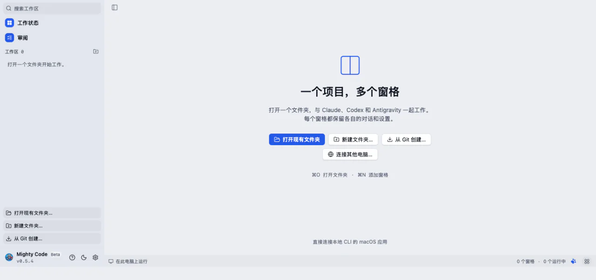
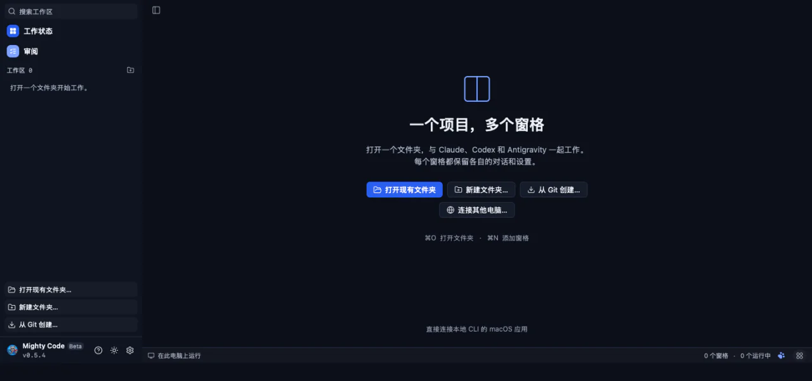
#所需工具
如果没有任何智能体 CLI（Claude Code、Codex、Antigravity、pi、opencode 或 Hermes）可以运行，或 Git 尚未就绪，应用启动时会先打开所需工具界面。界面按组列出智能体 CLI、基础工具（Git、Homebrew、Node、Bun）、风格工具（uv、Ouroboros、oh-my-claudecode、gstack）、Tailscale 以及 gh 和 glab。
- 勾选要安装的项目。首次打开时，缺少的 Git 会预先勾选；如果一个智能体 CLI 都没有，Claude Code 也会预先勾选；所选项目需要的工具（例如 gh 需要的 Homebrew）会一并加入。
- 点击安装所选项目后，会按顺序显示将要运行的所有命令。点击运行之后才会运行。
- 在 Mac 上，应用会在一个本地工作区中打开应用内的终端窗格（设置和此界面会关闭），命令在其中从主文件夹开始依次运行。没有打开任何工作区时（首次运行），同样的命令会在 macOS“终端”应用的新窗口中运行；macOS 可能会询问一次是否允许。无论哪种方式，结束后都会重新检查此界面中的状态。需要输入密码或确认的步骤，请直接在该终端窗格中回答；应用不会使用 sudo，也不会接收你的密码。某一步失败时，仍会继续下一步。
- 结束后，应用会重新检查。应用在前台时会重新打开此界面，否则会在状态栏显示工具安装已结束按钮。结果以重新检查到的状态为准，而不是命令的退出状态。新装好 CLI 时会出现登录按钮。
Git（Xcode Command Line Tools）会打开系统安装窗口，请在该窗口中完成。脚本最多等待 30 分钟；按 Control-C 只会结束等待并继续下一步。如果因为未同意 Xcode 许可而无法运行 git，Git 会显示为需要处理。Tailscale 会打开官方下载页面。版本过旧的 Claude Code 会显示为需要更新，并出现更新按钮。
可以用以后再说关闭；勾选不再显示后再关闭，启动时就不会再打开。缺少必需工具期间，欢迎界面上有所需工具按钮，因缺少 CLI 而受阻的窗格中有安装按钮。设置 → 组件中也有这些项目，每项一行，可用各自的安装按钮安装（组件）。
Windows Windows 上也有同样的界面。命令以主文件夹为工作文件夹，在应用单独打开的一个 PowerShell 窗口中依次运行（安装了 Windows Terminal 时为其标签页，否则为控制台窗口），最后按 Enter 之前窗口一直保持打开。Claude Code、Codex、Antigravity、Hermes 和 uv 使用各自的官方 PowerShell 安装脚本安装，pi 和 opencode 通过 npm 安装，Git 和 glab 通过 winget 仅为当前用户安装，Node.js 和 gh 通过 winget 为所有用户安装。为所有用户安装时，Windows 可能会自己弹出管理员确认窗口；此界面本身不会请求管理员权限。安装结束后，应用会从注册表重新读取 PATH 并检查。Homebrew、Bun 和 gstack 只在 Mac 上安装。
#打开工作区
一个工作区就是一个项目文件夹。窗格、标签页布局和对话记录按工作区分别保存。
添加工作区有三种方式。可以在侧边栏工作区标题右侧的文件夹按钮（点击后会打开包含这三项的菜单）、文件菜单、添加窗格菜单，以及侧边栏为空时和首次启动欢迎界面上的三个按钮中任选一处。
- 打开现有文件夹…（⌘O）：选择一个已有的文件夹。
- 新建文件夹…：设定文件夹名称和位置来创建新文件夹。开启作为 Git 仓库开始 (git init)后，会从一个空的 Git 仓库开始。即使 git init 失败，该文件夹仍会作为工作区添加，并有通知告诉你这一点。
- 从 Git 创建…：输入 Git 仓库地址。停止输入后会自动（或点击测试连接时）检查这台电脑自己的凭据能否访问它：Mac 钥匙串或 Windows 凭据管理器、git credential helper、ssh-agent。应用不会向你索要密码。看到 ✓ 后，点击创建开始下载（只有此时创建才可用）。文件夹名称会根据地址自动填入，也可以修改。下载时会显示进度，点击取消会停止并删除已创建一半的文件夹。失败时窗口保持打开并显示原因。如果没有安装 Git，打开所需工具按钮会打开设置界面。
位置会记住上次使用的位置。第一次使用时是当前工作区旁边的文件夹（即它的上级文件夹），没有的话则是主文件夹。新建或下载的文件夹会立即添加为工作区，并打开一个 Claude 窗格。这两个新项目没有快捷键。
在侧边栏中右键点击工作区，可以看到重命名…、在 Finder 中显示、打开文件窗格、打开工作地图、搜索对话和从列表中移除；如果是 git 仓库，还有代理窗格的 worktree、worktree 列表…、复制到 worktree 的文件…和worktree 准备命令…（窗格使用自己的 worktree）。从列表中移除后，磁盘上的项目文件仍会原样保留。要打开更多窗格，请使用新建 Claude 窗格（⌘N）。
#更改语言
- 打开设置… → 通用。
- 在语言中选择语言。选择跟随系统时使用 Mac 的语言。
- 菜单栏要在重新打开应用后才会更改。其他界面如果没有立即更改，重新打开应用后也会全部更改。
#打开帮助
可以直接在应用中打开本帮助，并以应用中选择的语言显示。
- Mac：菜单栏中的Mighty Code 帮助（⌘?）、侧边栏底部的帮助按钮，或设置… → 关于中的打开帮助按钮
- Windows：侧边栏底部的帮助按钮、F1，或设置… → 关于中的打开帮助按钮
- 手机：主机标签页中的帮助按钮
02界面布局
窗口分为左侧的侧边栏和右侧的主区域。在主区域中，可以把窗格叠放为标签页，也可以左右或上下分割排列。
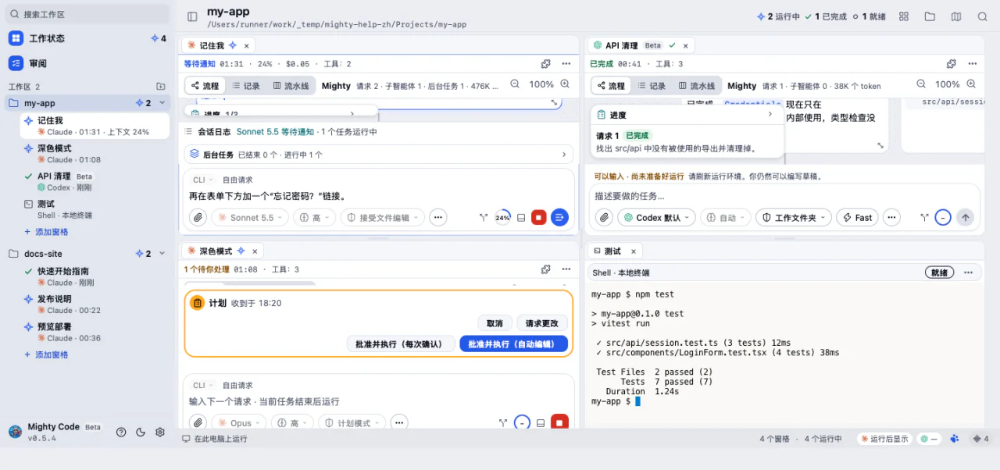
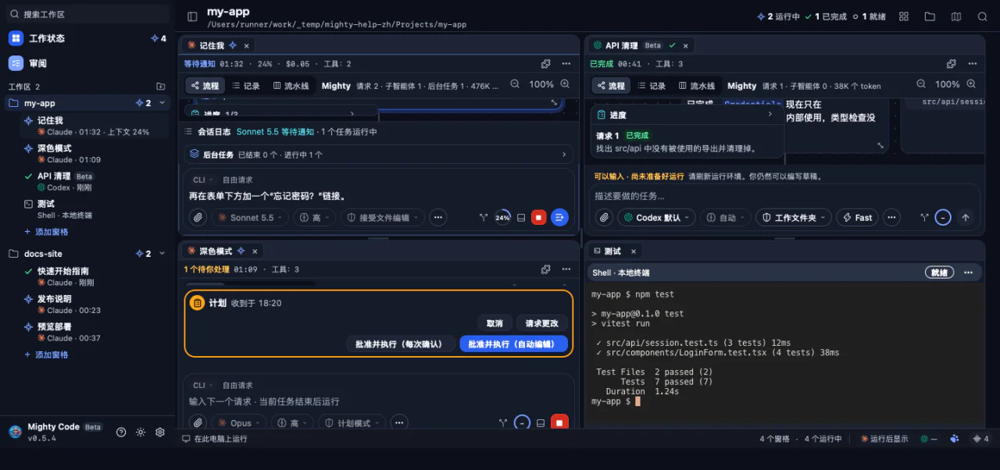
#侧边栏
侧边栏从上到下依次是：
- 搜索工作区：按⌘K可直接跳到搜索框。
- 工作状态：在一处查看所有工作区中窗格的状态。
- 审阅：集中查看有待审阅更改的窗格和请求（审阅队列）。
- 工作区列表：点击工作区即可切换到该工作区。点击旁边的箭头可以展开或收起其窗格列表。
- 底部：帮助按钮、主题按钮（深色、浅色）和设置按钮。
展开工作区后，最后一行是添加窗格按钮。右键点击窗格所在的行，可以看到重命名…和关闭窗格。
#调整侧边栏宽度
拖动侧边栏与主区域之间的边界线，即可调整侧边栏的宽度（调整侧边栏大小）。
- 指针移到边界线上时，它会变为强调色。左右拖动即可调整宽度。宽度只在限定范围内变化，重新打开应用后仍会保留。
- 双击边界线可恢复默认宽度。
- 用 Tab 键选中边界线后按← / →，每次变窄或变宽 10 px。
- 将边界线一直拖到最左侧会收起侧边栏。再次展开时，会恢复拖动前的宽度。
#收起侧边栏
想让主区域更宽时，可以收起侧边栏。
- 点击主区域标题栏左上角的侧边栏按钮，或按⌃⌘S。工作状态页面和首页的同一位置也有这个按钮。菜单栏的“显示”菜单中也有收起侧边栏。
- 再次展开时，同样使用该按钮或⌃⌘S（展开侧边栏）。
收起状态在重新打开应用后仍会保留。在收起状态下按⌘K，侧边栏会展开并跳到搜索框。
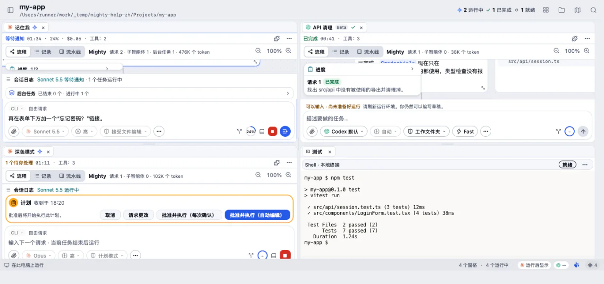
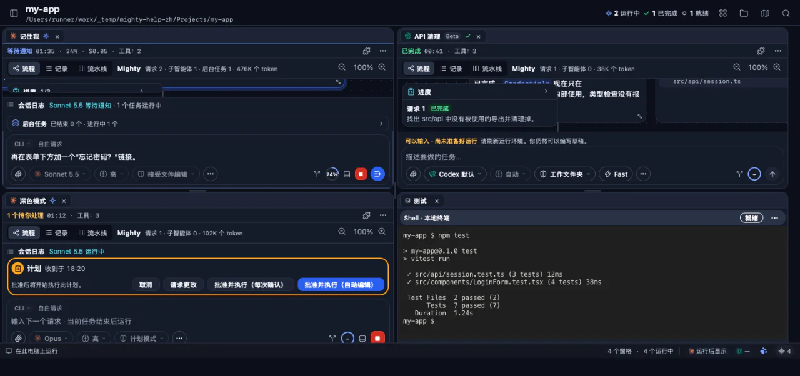
#工作状态
点击侧边栏搜索框下方的工作状态，可以按状态汇总查看所有工作区的窗格。
- 顶部的格子显示运行中、待你处理和已完成的数量。
- 账户用量限额卡片显示账户用量。此限额与使用同一账户的其他应用和会话共享。
- 每个工作区都有文件按钮和添加窗格菜单。
- 点击卡片即可转到该窗格。选择工作区或窗格后，会离开工作状态页面。
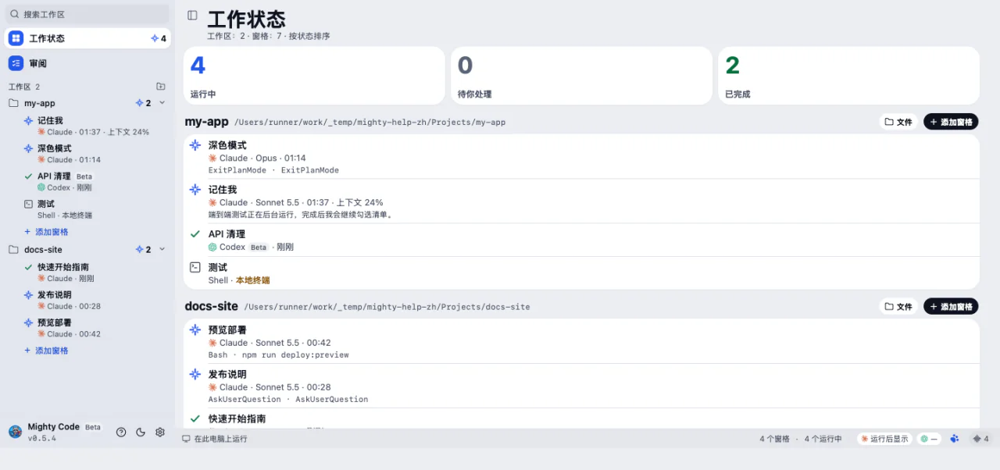
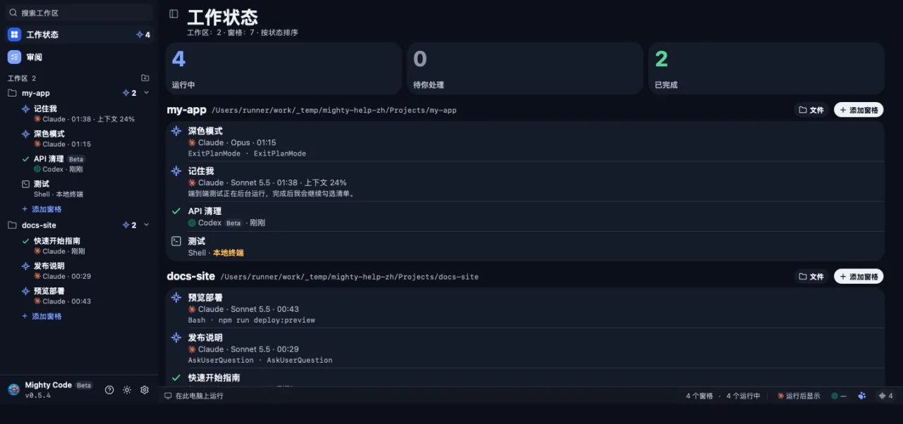
#审阅队列
把所有待审阅的内容集中在一处。点击侧边栏工作状态下方的审阅，或按 ⇧⌘R(Windows：CtrlShiftR)，即可打开审阅队列面板。条目旁的数字是等待中的数量。
- 列出的内容：留下更改后结束的worktree 窗格和子窗格，以及每个窗格最近结束、且保存了所改文件的请求(审阅请求更改)。仍在工作的窗格要等结束后才会出现。
- 每行显示窗格名称、代理、类型、工作区、分支及其基础分支、更改的文件数以及增删的行数，还有状态(就绪、冲突、已合并)。冲突排在最上，已合并的排在最下。
- 按钮：查看更改、合并(有未提交文件的 worktree 窗格为提交并合并)、在编辑器中打开、打开 PR(worktree 窗格)、丢弃、转到窗格、标记为已审阅。合并、丢弃和 PR 与窗格栏或子窗格卡片上的操作相同，会经过同样的确认。请求的查看更改会打开请求更改审阅。
- 点击标记为已审阅后，该项会隐藏，直到其工作再次变化。
- 列表在运行结束、打开面板和点击刷新时重新读取 git，不会在每次重绘时读取。
- worktree 窗格和子窗格的行会附上合并前检查摘要(检查 ✓或警告数量)。点击即可打开该窗格的检查标签页(检查)。摘要来自上次读取的检查结果和应用已知的信息(未提交的文件、剩余待办、窗格的 PR 状态)，列表本身不会另外调用 gh。
#提交与 PR
在一个面板中完成工作区的 git 操作。可从侧边栏工作区菜单中的打开提交与 PR、工作区标题中的分支显示，或输入框中的 /git 打开。从 worktree 窗格打开时，它在该窗格的 worktree 中工作。
- 更改标签页：更改的文件及其 diff、按文件或代码块暂存、切换分支、草拟提交信息、提交、push、创建 PR 以及请求修复失败的 CI。不会从默认分支创建 PR。
- 检查标签页：把合并前需要确认的内容集中在一个画面(检查)。
#检查
针对 worktree 窗格(其他窗格为当前分支)显示五项内容。
- 本地更改：未提交的更改数，以及比基础分支领先(↑)、落后(↓)的提交数。
- 拉取请求：PR(GitLab 为 MR)编号、状态、是否为草稿、冲突、审查结果(已批准、请求更改)。
- CI 检查：每项检查的结果。有失败的检查时，可用请求修复按钮连同失败日志交给代理处理。
- 审查讨论：未解决审查讨论的文件和行、作者、第一条评论、回复数和链接。
- 剩余待办：该窗格最近一次请求的清单中尚未完成的项目。
- 打开标签页时以及打开期间每 30 秒重新读取，关闭时不读取。
- 各项分别读取，因此没有 gh 或 glab、未登录或没有 PR 时，只有该项显示无法确认。
- 选中讨论后点击放入输入框按钮，会在“请处理 PR #42 的审查意见。”下方把
文件:行 (作者): 评论列表放入该窗格的输入框，不会立即发送。看起来像密钥的行会被隐藏，链接中的账户信息会被去掉，最多放入 2,000 个字符。 - 合并前确认：只要有失败或进行中的检查、未解决的讨论、剩余待办、未提交的更改(“提交并合并”除外)、草稿、冲突或请求更改中的任何一项，worktree 栏、子窗格卡片和审阅队列上的合并按钮就会显示原因并再确认一次。点击仍要合并即照常合并，不会阻止。
#添加窗格
窗格可以是 AI 智能体（Claude、Codex、Antigravity、pi、opencode、Hermes）、终端或文件中的一种。
- 点击侧边栏中的添加窗格按钮。
- 选择要创建的窗格：智能体（Claude、Codex、Antigravity、pi、opencode、Hermes）窗格、新建终端或打开文件窗格（⇧⌘E）。菜单最下方一组是添加工作区的三种方式：打开现有文件夹…、新建文件夹…和从 Git 创建…（打开工作区）。
- 新的 AI 窗格会沿用同一智能体最近使用过的窗格的模型、思考强度、权限和视图。对话则从头开始。
快捷键：新建 Claude 窗格为⌘N，添加终端窗格为⌘T，打开文件窗格为⇧⌘E。所有工作区合计最多可以打开 128 个窗格（原样显示其他电脑窗格的远程窗格不计入）。
除 Claude 以外的智能体窗格（Codex、Antigravity、pi、opencode、Hermes）带有Beta标记。
#继续之前的会话
添加智能体窗格时，如果此文件夹中有之前的会话，会弹出选择窗口。Antigravity 会列出此文件夹中的对话，子代理运行的对话不会列出。
- 要开始新对话，请点击开始新会话；要继续之前的对话，请点击继续…按钮。
- 在继续之前的会话列表中选择会话。可以用搜索标题查找。
- 新窗格会继续该会话。
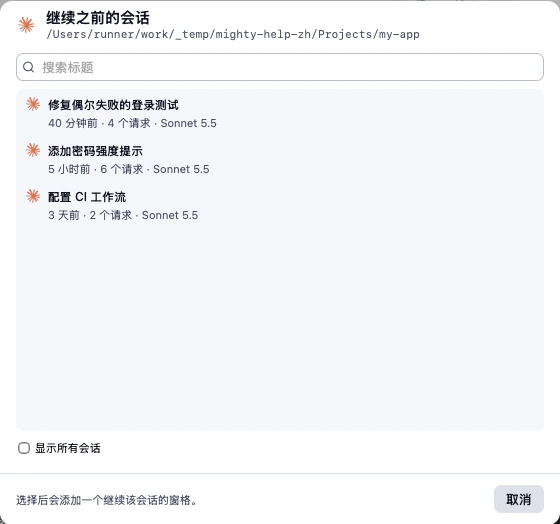
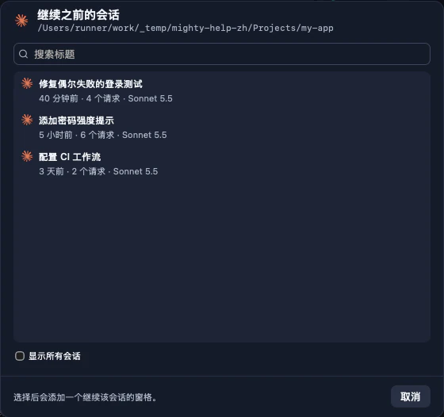
#搜索过去的对话
搜索对话（⇧⌘F）会在此文件夹过去会话的请求和回答中查找词语。也可以从工作区标题栏的放大镜按钮、在侧边栏右键点击工作区的菜单，以及菜单栏的工作区菜单打开。
- 列出某条消息包含所有词的会话，按时间从新到旧，最多 50 个，找到的词会被标出。不搜索工具输出。
- 搜索 Claude、Codex、Antigravity 和 pi 的会话，不搜索 opencode 和 Hermes 的会话。已在窗格中打开的会话和超过 60 天的会话不包括在内。
- 用 ↑ ↓ 选择后按 Enter，或点击继续，新窗格会继续该会话。
- 另存为 Markdown…会把该对话的请求和回答保存为 Markdown 文件。
- 远程工作区中不可用，因为会话记录在那台电脑上。
#标签页与分割
- 将标签页拖到另一组的中间，即可合并为标签页（合并为标签页）。
- 放到某组的左、右、上、下边缘，就会向该方向分割。
- 拖动分割线可以调整大小，双击分割线则平分两侧。
- 拖动过程中按Esc即可取消。
- 双击标签页可以重命名。右键点击标签页，可以看到重命名…、专注和关闭标签页。
布局按工作区分别保存。切换工作区后，各自的布局保持不变。
#窗格菜单
窗格标题栏中的 … 按钮包含以下项目：
- 重命名…
- 专注：只放大显示此窗格。再次点击即可返回之前的布局。
- 复制运行日志：复制智能体窗格的运行记录。终端窗格在这个位置是之前的命令记录…（终端窗格）。
- 开始新对话：从下一个请求起不再接续之前的对话（智能体窗格）。
- 关闭窗格
右键点击窗格标题栏，会有重命名…、专注视图 / 返回和关闭，终端窗格还有之前的命令记录。
#快捷键
| 快捷键 | 操作 |
|---|---|
| ⌘O | 打开现有文件夹… |
| ⌘N | 新建 Claude 窗格 |
| ⌘T | 添加终端窗格 |
| ⇧⌘E | 打开文件窗格 |
| ⇧⌘F | 搜索对话 |
| ⇧⌘R | 审阅队列 |
| ⇧⌘U | 转到需要注意的窗格 |
| ⌘K | 搜索工作区 |
| ⌃⌘S | 收起侧边栏 / 展开侧边栏 |
| ⌘, | 设置… |
| Enter | 发送请求。在运行中的窗格里，按运行时发送到的选择放入队列，或立即在所选代理的新 worktree 中运行（运行时继续提出请求） |
| ⇧Enter | 换行 |
| ⌘Enter | 在运行中的窗格里立即在新的 worktree 中运行（开启了Mighty 编排、位于 git 仓库中的窗格）；在其他运行中的窗格里放入队列 |
| Esc | 关闭弹出面板、关闭斜杠命令列表 |
| ⌘= / ⌘- / ⌘0 | 放大文字 / 缩小文字 / 默认文字大小 |
| ⌘? | Mighty Code 帮助 |
03智能体窗格
智能体窗格是与 Claude、Codex、Antigravity、pi、opencode 或 Hermes 之一对话的窗格。在下方的输入框中写请求，在上方查看进度和结果。
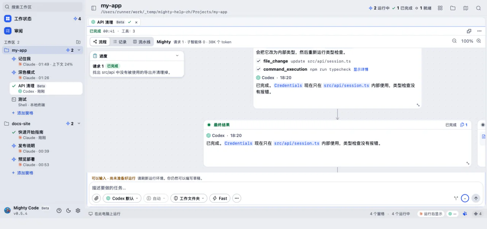
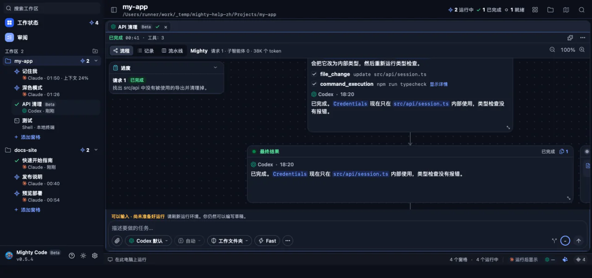
#发送请求
- 在输入框中写下要做的事。
- 按Enter或点击发送按钮。要换行，请按⇧Enter。
- 运行期间，发送按钮的位置会变成停止按钮。要停止，请点击该按钮。
使用输入法组字时（例如输入中文或韩文）按下的Enter只会完成组字，不会发送。
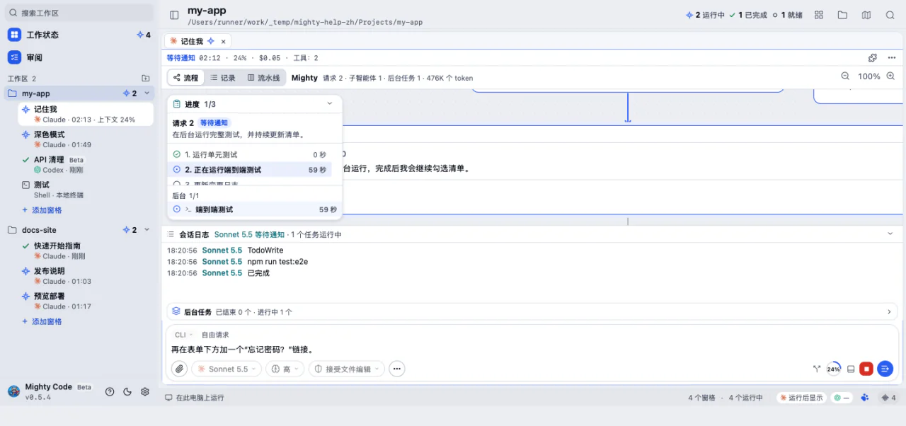
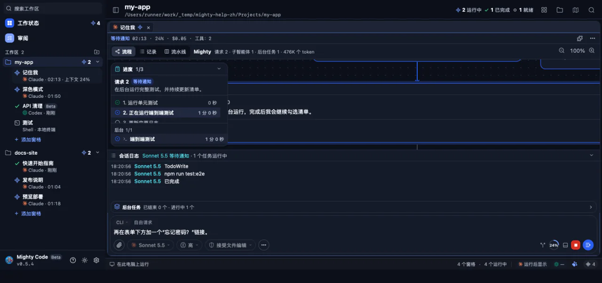
#运行时继续提出请求
任务运行期间也可以写下一个请求。输入框中有文字时，停止按钮旁会出现与发送按钮相同的圆形按钮。
- Enter或加入队列按钮：作为下一个请求放入队列。当前任务结束后按顺序执行。每个窗格最多可放 16 个。如果在下面的运行时发送到中选了代理，则改为立即用该代理在新的 worktree 中运行。
- 运行时发送到：只在运行时显示的选项；输入文字后它与发送按钮合为一个控件，呈[目标 ▾ | ↑]的样子（没有输入时单独显示为小胶囊）。只有目标为队列时，其左侧才另外显示在新 worktree 中运行按钮；选择了 worktree 时发送按钮做同样的事，因此隐藏它。选择队列时显示列表图标，选择了代理时显示该代理的图标；悬停时显示当前选择。它提供队列（默认），以及此窗格可作为子窗格启动的每个代理的一项，例如“worktree · Codex”（Claude、Codex、Antigravity）。CLI 未安装或未登录、没有合适模式，或你直接打开的子窗格已有 3 个的项目显示为灰色并说明原因。所选的值决定Enter和圆形按钮的作用：把请求放入队列，或在此窗格旁打开该代理的子窗格，立即在新的 worktree 中运行。输入框的提示和按钮名称也随之改变。每个窗格会记住所选的值，直到退出应用。只有附件、没有文字的请求会放入队列。
- ⌘Enter（Windows 上为CtrlEnter）或在新 worktree 中运行按钮：无论运行时发送到选了什么，始终使用此窗格自己的代理。在开启了 Mighty 编排、位于有提交的分支上的 git 仓库中的 Claude 窗格，或处于子窗格能更改文件的模式的 Codex、Antigravity 窗格里，会在此窗格旁打开一个拥有自己 git worktree 的新子窗格并立即运行，正在运行的任务照常继续；子窗格完成后，在侧边栏的卡片上合并它的结果（在新的 worktree 中运行）。
- 在子窗格中、在这样的仓库之外，或关闭 Mighty 编排时，⌘Enter也会像Enter一样放入队列。如果此窗格的代理在当前模式下无法创建子窗格、但其他代理可以，⌘Enter会放入队列，不过可以通过运行时发送到和下面立即运行的代理选择，在该代理的子窗格中运行。无法创建或启动子窗格时，文字同样会放入队列（在新的 worktree 中运行）。你发送的内容不再插入正在运行的任务；在较早的记录中，Mighty 视图仍会把这类文字显示为橙色的中途输入块。直接送进正在运行的 Claude 父窗格的委派通知，显示为同样颜色的委派通知块（通知和保留）。
- 队列中的每个请求，在 ✕ 旁都有一个立即运行按钮。在能创建新 worktree 的地方（满足上面 ⌘Enter 的条件，或换用其他代理就能创建子窗格的窗格），它会立即在新的子窗格中运行该请求，正在运行的任务照常继续。在按钮前的代理选择（默认是此窗格的代理）中选择其他代理，即可在该代理的子窗格中运行。按钮的提示会说明将会发生哪一种。只有附件、没有文字的请求不会进入 worktree。
- 无法创建 worktree 时，请求在本窗格中处理。窗格处于空闲状态（例如因出错而停止）时，会立即开始该请求。Claude 的回答已结束、只剩后台任务的窗格，会把它直接送进正在运行的 Claude，并在 Mighty 视图中显示为中途输入块（带附件的请求要等到任务结束）。其他情况下按钮显示为灰色，提示会说明原因：当前任务必须先结束、为该窗格保留的项目要先送出，或 CLI 正在更新。此时请求依次等待。Antigravity 卡片的后续请求只会在它自己的窗格中运行。
停止任务时，排队中的请求也会被取消。但在只等待后台工作的窗格中停止时，队列会保留，并立即开始第一个请求。重新打开应用后，队列会被清空。
#输入框工具
输入框下方一行从左到右依次是附件、模型、思考强度、权限和更多运行设置（…）。窗格较窄时，部分项目会收进一个菜单。运行期间无法更改，更改后的值从下一个请求起生效。
#模型
点击模型按钮，可以选择提供商（Claude、Codex、Antigravity、pi、opencode、Hermes）和模型。如果列表不对，请点击刷新模型列表。切换智能体会开始新的对话。
#思考强度
思考强度决定模型思考的深度，可以在 Auto、Low、Medium、High、XHigh、Max 中选择。只显示模型支持的级别。Codex 模型支持时还有 Ultra · 自动委派：思考最深，并可能把部分工作交给 Codex 自己的子代理，因此用量可能更多。Antigravity 没有此项；pi 有 Off、Minimal、Low、Medium、High、XHigh；opencode 有 Low、Medium、High、Max，即模型提供的变体；Hermes 有 Low、Medium、High、XHigh、Max。
#权限
权限决定智能体无需询问即可做哪些事。
| 智能体 | 可选权限 |
|---|---|
| Claude | 计划模式 · 始终询问 · 接受文件编辑 · 自动模式 · 绕过权限 |
| Codex | 只读 · 请求批准 · 工作文件夹 · 完全访问 |
| Antigravity | 默认权限 · 计划 · 允许编辑 · 完全访问 |
| pi | 只读 · 完全访问 |
| opencode | 默认权限 · 计划 · 允许编辑 · 完全访问 |
| Hermes | 默认权限 · 允许编辑 · 完全访问 |
- Claude 的 始终询问、Codex 的请求批准除完全访问外的所有 opencode 权限，以及 Hermes 的文件修改和危险命令在需要额外权限时，会在窗格中请求批准。请参阅批准与提问。
- 只有已安装的 Claude CLI 支持时，才会显示 自动模式。Codex 的请求批准在不支持它的旧版 Codex 中不显示。
- 绕过权限 和完全访问权限也能访问项目以外的文件和命令。请仅在确有必要时使用。
#Antigravity
Google 的智能体通过 Antigravity CLI（agy）运行，它也可以运行 Claude 和 GPT-OSS 模型。
- 安装：在 Mac 上运行
curl -fsSL https://antigravity.google/cli/install.sh | bash，agy会安装到~/.local/bin。在 Windows 上，在 PowerShell 中运行irm https://antigravity.google/cli/install.ps1 | iex，agy.exe会安装到%LOCALAPPDATA%\agy\bin。应用通过agy update更新它。 - 登录：在终端窗格中运行一次
agy，并在浏览器中用 Google 账户登录。点击组件标签页中的登录，应用会替你运行。Antigravity 没有退出登录命令；要切换账户，请在agy中使用/logout。 - 权限：Antigravity 无法在应用中询问你。默认权限遵循 agy 中保存的 Agent Mode（如果没有在 agy 的
/config中更改，则为审核）：它可以读取工作区的文件，但会拒绝需要询问的文件编辑和 shell 命令，结束这一轮后，再用权限卡片询问被拒绝的操作。点允许一次或始终允许后会在同一个对话中继续（Antigravity 的权限卡片）。计划会在 agy 自己的文件夹中写下计划，然后停止，不会修改项目；要执行计划，请用其他模式发送下一个请求。如果想提前允许某些操作，请自行在~/.gemini/antigravity-cli/settings.json的permissions.allow中添加允许规则（例如command(git status)；规则会允许以该文本开头的所有命令，请尽量写得窄一些），或选择允许编辑（文件编辑）或完全访问（全部允许）。 - Antigravity 的每个模型名称中已包含思考深度，因此没有单独的思考强度。
- Mighty视图与 Claude、Codex 相同：Antigravity 启动的每个子代理都会在请求下方成为单独的块，其内容（收到的指示、消息、工具调用和发回的答复）从
~/.gemini/antigravity-cli（Windows 上为%USERPROFILE%\.gemini\antigravity-cli）中子代理自己的记录读取；读取过的文件只显示名称，不会复制内容。对话中较早的请求也从同样的记录加载，继续…会列出此文件夹中的 Antigravity 对话。 - 以前运行 Gemini CLI 的窗格会保留记录，但下一个请求会开始新的对话；如果选过 Gemini CLI 的模型，会改回默认。
#pi
pi（pi）是支持多家模型提供商的开源编码智能体 CLI。
- 安装：在所需工具界面中安装（缺少 Homebrew 和 Node.js 时会先安装它们），也可以自己运行
npm install -g @mariozechner/pi-coding-agent。应用用pi update self更新它。 - 登录：点击组件标签页中的登录，会打开运行
pi的终端窗格。在其中输入/login，选择订阅（Claude Pro/Max、ChatGPT、GitHub Copilot）或 API 密钥。环境变量中的 API 密钥（如ANTHROPIC_API_KEY）或~/.pi/agent/auth.json中保存的凭据也视为已登录。退出登录请在 pi 中输入/logout。 - 模型：登录后，列表来自
pi --list-models，以“提供商/模型”显示，第一项遵循 pi 自身的设置。不支持思考的模型不显示思考强度。级别为 Off、Minimal、Low、Medium、High、XHigh。 - 权限：pi 没有审批窗口，所以只有两种模式。只读模式只启用读取工具（read、grep、find、ls）。完全访问模式不经询问使用所有工具，也可能触及项目之外。
- 每次请求都会在窗格的工作文件夹中运行
pi --mode rpc，并延续窗格自己的会话，会话保存在~/.pi/agent/sessions。继续…中也会列出该文件夹的 pi 会话。 - 提问：pi 没有提问工具，因此应用在每次运行时以扩展的形式加入
ask_user工具（不会更改你的~/.pi设置）。pi 通过它提问时会弹出提问卡片，回答后同一请求继续进行。其他扩展打开的选择、确认和输入对话框也以同样的卡片显示。 - 暂不支持：pi 窗格不参与Mighty 编排，不能在远程工作区中打开，也没有审批卡。
#opencode
opencode（opencode）是支持多家模型提供商的开源编码智能体 CLI，其自有服务 opencode Zen 的免费模型无需登录即可使用。
- 安装：在所需工具界面中安装（缺少 Homebrew 和 Node.js 时会先安装它们），也可以自己运行
npm install -g @opencode/cli。应用使用 OpenCode 2；Mac 上若有 OpenCode 1 会显示为过旧，从设置界面安装时会先删除 npm 的opencode-ai。应用用opencode upgrade更新它。 - 登录：点击组件标签页中的登录，会打开运行
opencode auth login的终端窗格。在其中选择提供商，然后用其订阅登录或输入 API 密钥。opencode 保存的登录（opencode auth list）或环境变量中的 API 密钥（如ANTHROPIC_API_KEY）也视为已登录；两者都没有时只提供 opencode Zen 的免费模型。退出登录请在终端中运行opencode auth logout。 - 模型：列表来自
opencode models，以“提供商/模型”显示，第一项遵循 opencode 自身的设置。 - 权限：所选模式会成为该次请求专用的 opencode 规则，规则留待询问的操作会像 Claude 一样以审批卡出现在窗格中。默认权限在修改文件、执行命令、访问网络和访问项目外内容前询问；允许编辑修改文件不询问；计划使用不修改文件的 opencode plan 智能体运行；完全访问从不询问。
- 每次请求都会在窗格的工作文件夹中运行
opencode acp（OpenCode 2，Agent Client Protocol），并延续窗格自己的会话，会话保存在 opencode 的opencode.db。继续…中也会列出该文件夹的 opencode 会话。用量中显示会话费用、正在使用的上下文和该次请求的令牌。 - 提问：opencode 通过
question工具提问时会弹出提问卡片，回答后同一请求继续进行。在卡片上点击取消后，opencode 会结束该请求。 - 暂不支持：opencode 窗格不参与Mighty 编排，不能在远程工作区中打开。
#Hermes
Hermes（hermes）是 Nous Research 的开源智能体 CLI（Hermes Agent），可使用 Nous Portal、OpenRouter、Anthropic、OpenAI 等多家模型提供商。
- 安装：在所需工具界面安装（没有 Git 时会先安装）。官方安装脚本会连同自带的 Python 环境一起装到
~/.hermes，并下载浏览器工具，需要几分钟。也可以自行安装：在 Mac 上运行curl -fsSL https://hermes-agent.nousresearch.com/install.sh | bash，在 Windows 上于 PowerShell 中运行irm https://hermes-agent.nousresearch.com/install.ps1 | iex。更新由应用通过hermes update完成。 - 登录：点击组件标签页中的登录按钮，会打开运行
hermes model的终端窗格。在其中选择模型提供商，登录或输入 API 密钥，然后选择默认模型。应用只读取 Hermes 找到凭据的提供商名称。要删除凭据，请在终端使用hermes auth。 - 模型：第一项跟随 Hermes 自身的设置（通过
hermes model设定的默认模型）。Hermes 只有打开会话后才给出模型列表，因此发送第一个请求后才会出现提供商:模型列表。 - 权限：默认权限在每次修改文件前用窗格中的批准卡片询问；允许编辑不询问工作文件夹内的修改；完全访问即 Hermes 的
--yolo，危险命令也不询问。危险命令（如rm -rf）按 Hermes 的审批设置（approvals.mode）用卡片询问，其他命令和读取不询问。没有仅规划的模式。完全访问在会话开始时确定，已开始的会话要从新对话起才生效。 - 每个请求都会在窗格的工作文件夹中运行
hermes acp（Agent Client Protocol），并继续该窗格的会话。实际工作由 Hermes 的网关（后台进程）完成，它按需启动，空闲时退出。会话保存在~/.hermes/state.db中，继续…中也会列出此文件夹的 Hermes 会话。用量显示会话的累计令牌数和正在使用的上下文；Hermes 不报告费用。 - 提问：Hermes 通过 clarify 工具提问时会弹出提问卡片，回答后同一请求继续进行。Hermes 默认在编辑器连接（ACP）中关闭此工具，因此应用会在第一次 Hermes 请求之前，用
hermes config set设置 Hermes 配置中的platform_toolsets.acp这一项来开启它，并在记录中说明。如果你自己保存过该列表，应用不会改动。从新对话开始生效；要撤销，请在终端运行hermes config unset platform_toolsets.acp。Hermes 只等待回答一段时间（默认 90 秒），之后卡片会关闭，Hermes 在没有回答的情况下继续。 - 暂不支持：Hermes 窗格不参与Mighty 编排，也无法在远程工作区中打开。
#更多运行设置
点击 … 按钮会打开运行设置。
- Claude：最大轮数和费用上限（USD）。留空则不设限制。
- Codex：网页搜索设置和Shell 网络。输入框中的 Fast 按钮在支持的模型和账户上回答更快，但会消耗更多用量。
更改值后，点击应用。
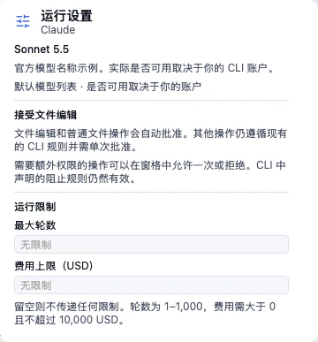
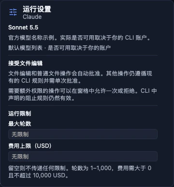
#附加文件和图片
点击回形针按钮、将文件拖到输入框中，或用⌘V粘贴图片。
- 最多 8 个文件，每个文件 5 MiB，总计 8 MiB。图片（PNG、JPEG、GIF、WebP）、PDF 和文本文件按原格式传递，其他文件作为二进制文件传递。
- 发送前可以预览，并逐个移除。也可以只发送附件。
- 终端窗格不能添加附件。
#发送对象
在手机应用中，安装了 oh-my-claudecode 的 Claude 窗格，输入框里会出现发送对象开关。它列出已安装的其他 CLI（Codex、Antigravity 等）；选定后，之后的请求会通过 oh-my-claudecode 的 ask 发给它，答案会出现在 Claude 的回复中。选择Claude（默认）则像以前一样发给 Claude。Mac 和 Windows 应用的输入框没有这个开关，从那里发送的请求总是发给该窗格自己的代理。若要交给其他代理，请使用运行时发送到或队列行的代理选择。
- 向其他 CLI 提问时无法发送附件。
- oh-my-claudecode 启动所选 CLI 时会关闭它的审批确认和沙盒，因此它可以不经询问就修改此文件夹中的文件并运行命令。Mighty Code 的权限模式和审批卡片只管 Claude 启动它的那一步。选择了某个 CLI 期间，输入框会用一行显示此警告。
- 在 Windows 上，旧版 oh-my-claudecode 会拒绝向 Antigravity 提问。如果收到这样的回答，请更新 oh-my-claudecode 或改用 Gemini CLI。
- 以
/开头的文字仍原样发给 Claude。
#斜杠命令
在输入框中输入 / 会显示命令列表。用↑↓选择，按Enter或Tab插入，按Esc关闭。
| 命令（以 Claude 为准） | 作用 |
|---|---|
/model | 更换模型 · 接着选择名称 |
/permissions | 更改权限 · 接着选择模式 |
/clear | 开始新对话 · 下一次输入不会继续之前的对话 |
/cost、/usage | 显示此窗格的 token 和费用 |
/plugin | 打开插件市场 |
/config | 打开 Mighty Code 设置 |
/rename | 重命名此窗格 |
/help | 显示此窗格中可用的应用命令 |
/advisor | 以只读方式询问另一个代理的意见（/advisor [代理] [问题]） |
/committee | 向两个代理问同一个问题，两份意见并排（/committee [代理 代理] [问题]） |
Codex 和 Antigravity 的命令名称略有不同（例如 Codex 的 /new、/approvals、/status，Antigravity 的 /usage、/config）。列表中没有的 /名称 会作为 CLI 的技能、用户命令或插件命令原样传递。Antigravity 的技能也是这样运行的，列表中会显示 agy 自带的技能、~/.gemini/antigravity-cli/skills 中你的技能以及文件夹的 .agents/skills；pi 使用 /new、/session、/settings，opencode 和 Hermes 使用 /new、/usage、/settings。在任何智能体窗格中，/help 都由应用直接显示此窗格可用的命令。/skills 等 Antigravity 自身的只读命令只有在终端中以 agy -p "/skills" 单独运行时才会回答，因此在应用中会以 agy 的错误结束。
#其他代理的意见
/advisor 会把此窗格最后的计划（如有）、最后的结果以及最后一个请求改动的文件摘要发给另一个代理并取回意见。可以像 /advisor codex 这个计划可行吗？ 这样附上代理和问题；不写代理时，会询问与此窗格不同、已安装并登录的第一个代理（按 Claude、Codex、Antigravity、pi 的顺序）。/committee 向两个代理提出同一个问题，并排显示两份意见，不汇总异同。
- 给出意见的代理只运行一次，且为只读（Claude 用计划模式且只有读取工具，Codex 用只读沙箱，Antigravity 用计划模式和沙箱，pi 只有读取工具）。它不会改文件、不运行命令，也不保留会话。opencode 和 Hermes 在单次运行中会自行批准，因此不能选择。
- 发送的内容会缩减大小并删除看起来像密钥的行。回答以意见卡片的形式附在窗格下方（代理、模型、已知时的费用），点 放入输入框 可放入输入框，请此窗格的代理采纳。费用计入用量账本中此窗格的工作区。
#上下文与用量
发送按钮旁的圆环显示对话已使用了多少上下文。点击它可以查看上下文用量、输入/输出/缓存 token、费用、所用模型和会话 ID。只显示 CLI 报告的值，不会估算未知的值。
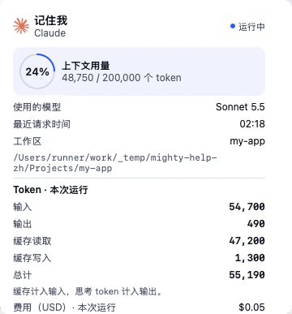
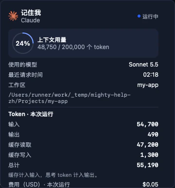
#Mighty 视图
所有智能体窗格（Claude、Codex、Antigravity、pi、opencode、Hermes）都以Mighty视图显示：以块状流程显示请求、子智能体、后台任务和结果。没有需要切换的地方。
#Mighty 流程
Claude 窗格的流程是：请求 → 中间发生的事 → 最终结果。请求块只包含你发送的内容。在答复到来之前，结果的位置上会有一张执行卡片，显示主会话的模型和它现在在做的事（Claude 最后说的话，或之后运行的命令）。点击卡片会展开包含全部消息和工具调用的执行块；答复到来后，最终结果卡片会出现在那个位置。中间没有任何事情的简短提问只有请求和结果两个块。其他智能体的窗格仍然在请求块正下方接着执行块。
块的标题栏用最前面的状态点和标题显示当前状态。点的颜色表示状态（运行中为蓝色，等待你回应为黄色，完成为绿色，出错为红色，已停止为灰色）。最终结果的标题也会染成该颜色，让已结束的结果一目了然。是谁在工作（主会话、子智能体、后台命令）由类型标记的颜色显示，把鼠标放在点上会告诉你角色。标题后面是子智能体的类型（Explore、你自己创建的智能体名称等）以及后台、分叉、worktree 标记，执行块还会显示窗格中选择的思考强度。模型与令牌数一起显示；还没有响应时，在请求的模型后面标注“请求”。如果你创建的智能体的定义文件里有 color，就使用该颜色。块较窄时这些标记会先隐藏，把鼠标放在点上可以看到全部。
在 Claude 窗格的流程中，除结果以外的内容都会折叠成小卡片。子智能体和后台命令无论在运行还是已结束都是卡片，卡片和块有相同的标题栏（图标、标题、状态、展开按钮），下面显示两行：现在在做的事（结束后为答复的第一行），以及类型和模型、已用时间、工具调用次数和令牌。只显示应用实际看到的值，没有进度百分比。点击卡片会展开为完整的块，用块标题栏上的折叠为卡片按钮可以再次折叠。点击已结束的后台子智能体卡片，会展开后台工作已完成图中的那个块。在后台运行的命令（例如等待 CI、构建应用、开发服务器）也会以灰色卡片站在同一行，显示说明和命令、该命令最后输出的一行，以及运行时间或结束状态和退出码。
Claude 列出待办清单后，请求下方会按顺序为每个已开始的步骤显示一张卡片（第 1 步 → 第 2 步 → …）。在某个步骤期间启动的子智能体和命令显示在该步骤右侧，卡片上会多一行，例如 ↳ 2. 撰写说明，表明属于哪个步骤。点击步骤卡片会展开该步骤期间的记录。没有步骤的请求中，子智能体并排在请求下方的一行，上方的分支说明把工作交给了多少个、用哪个模型，以及还有多少个在运行。应用会让 Claude 在每个使用工具的请求开始时先列出待办清单，所以除简短回答外，大多数请求都会有步骤。
在 Claude 窗格的流程下方、输入框上方，有一条会话日志。它的标题行是当前状态：主会话的模型和状态、它的子智能体中有多少个在运行，以及有多少个后台命令在运行，各用其角色的颜色显示。展开后，它会列出最新请求中最近发生的五件事：时间、是谁（主会话的模型或子智能体的名称）、做了什么（工具调用、子智能体的开始和结束、提问、上下文摘要、通知到达）。点击某一行，流程会移到对应的块。用右端的按钮可以把它折叠成只剩状态行，每个窗格会记住是否折叠。
在后台启动的子智能体和后台命令（任务）在运行期间不会画成请求的块，而是在下面进度面板的后台组里。在 Claude 窗格的流程中，它们还会显示为上面的卡片。任务结束、通知送达 Claude 后，Claude 的每一次回答都会生成一个新的后台工作已完成图表，每个已结束的任务一个块：类型行（子智能体还是后台命令，以及结束状态）、命令、输出的最后几行，以及子智能体的报告。在记录中，这个图表是新增的一行；在流水线中，它是末尾新增的一张卡片（看板）。手机上的 Mighty 视图和流水线也一样。
每个智能体窗格的流程左上角都有进度面板。它显示画面中请求的编号、状态和内容；智能体告知计划时，还会显示每个步骤是已完成、进行中（时间在走）还是未开始。步骤来自 Claude 的待办清单、Codex 的计划（update_plan）、opencode 和 Hermes 的计划以及 Gemini 的清单（task.md）。设置… › 通用 中的 请智能体提供进度清单（默认开启）会请 Gemini、Codex、opencode 和 Hermes 在工作时留下计划。没有收到计划的请求，以及没有计划功能的 pi，会把智能体正在做的事（读取、写入、修改文件，命令，搜索，子智能体）逐行显示为步骤。如果请求启动了后台任务（命令、后台子智能体），底部的后台组会显示正在运行的数量和总数，并为每项显示一行（状态和耗时）：正在运行的排在前面，最多 100 行，可在面板内滚动查看，超出部分以数量显示。新请求开始时显示该请求；你自己滚动后，改为显示画面中的请求。最终结果到达时，流程会平滑地移到那个最终结果块；如果那时你正在自己移动流程，或正在移到其他块，则保持不动。点击请求行会移到该请求，点击步骤行会移到该步骤的卡片（只有 Claude 窗格的流程有步骤卡片）。用标题栏的按钮折叠后，只留下标题和请求行。
- 拖动空白处或滚动即可移动流程。用缩放按钮可以在 50% 到 150% 之间调整。
- 点击某个块后，只在该块内部滚动。点击空白处或按Esc即可取消选择。
- 拖动块的右下角可以调整大小。右键点击可以选择恢复默认大小。大小按会话保存。
- 滚动到最顶部后，可以用加载更早的记录每次加载 10 个之前的请求。加载的记录仅供查看。
- 在 Claude 和 Codex 窗格中，用标题栏中的拼图按钮可以打开已安装的插件和插件市场。
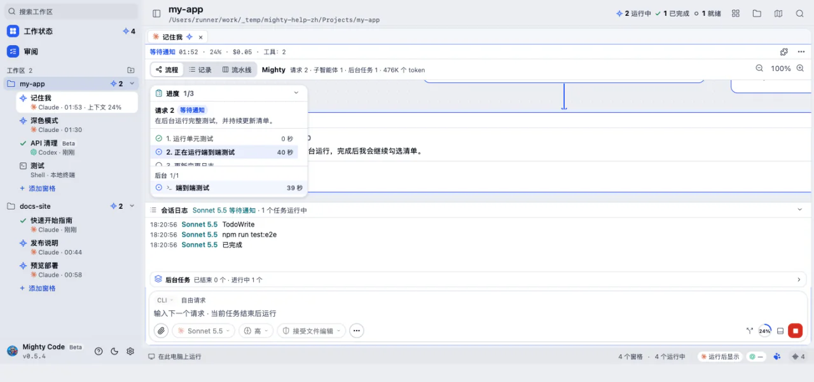
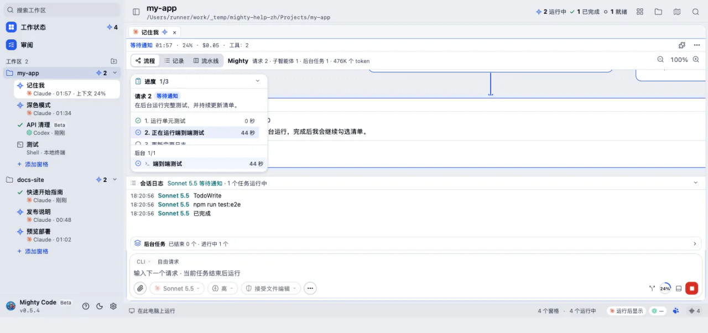
#记录
用 Mighty 视图顶部的流程 | 记录切换开关，可以按时间顺序以列表形式查看请求。每个请求行之后是它的执行行，然后是子智能体行。
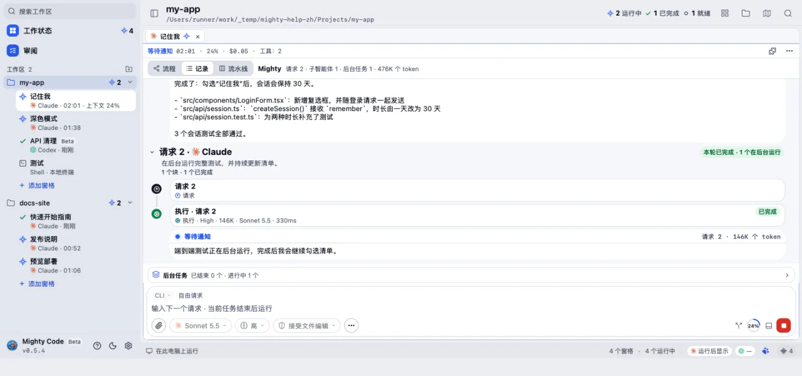
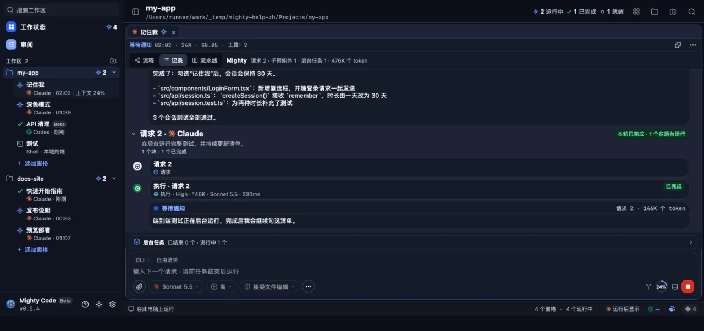
#流水线
在同一个切换开关中选择流水线，可以把请求看成看板式的流水线。
- 视图一次只显示一项：没有风格的窗格显示一个请求，使用风格的窗格显示一条流水线。流水线是阶段只向前推进的一串请求；某个请求的阶段比前一个请求退回到更早的阶段时，就开始一条新流水线。
- 用顶部的 ◀ 上一个和 ▶ 下一个前后切换。点击两者之间的标题（如"请求 3 / 7"）会打开列表，显示每一项的编号、标题、状态和阶段，可直接选择。
- 下方显示状态（使用风格的窗格还有流水线名称）。各阶段显示为每一列顶部的标签，标签之间用线相连。没有风格的窗格是请求 → 执行 → 结果，使用风格的窗格是该模式的阶段。
- 内容放在并排的列中，每个阶段一列，列头显示阶段标签和卡片数。没有风格时，请求列放请求，执行列放显示进度（最新消息和工具调用）与状态的卡片，后面每个子代理一张卡片，结果列放结果。使用风格时，每个阶段列放该阶段的请求卡片（请求、执行摘要和一行结果），其子代理卡片放在下方。嵌套的子代理会缩进，并注明它在哪个块之下。
- 颜色也会表示状态。每一列的背景铺上该阶段状态色的浅色（完成为绿色，运行中和等待通知为蓝色，等待你回应为黄色，出错为红色，已停止为灰色），当前阶段跟随其最新请求的状态，尚未进行的阶段保持原来的背景。每张卡片状态文字前的点是同样的颜色，背景比列的颜色更深；运行中的卡片保留流动的边框，等待中的卡片保留黄色边框，状态文字照常显示。
- 长文本默认折叠，点击显示更多即可就地展开。点击卡片标题栏中的小按钮，会在流程中显示该块。
- 视图从最新的一项打开，停留在那里时会随新的请求或流水线前进。查看较早的一项时出现新项，位置保持不变，▶ 旁会出现新请求或新流水线标记，点击即可转到最新的一项。
- 每一列各自移动：列头留在顶部，只有卡片上下移动。在某一列上用触控板或鼠标滚轮上下滚动，或拖动其中的空白处，只会移动这一列；列放不下时，横向滚动或拖动即可左右移动流水线。
- 在最新一项上，停在末尾的列会跟随新内容向下。自己移动过的列，或展开了文字的列，会停在原处，回到该列末尾后再继续跟随。来了新请求时，每一列都会显示末尾；之前的项打开时，每一列都从顶部开始。Windows 应用中整个流水线仍然一起移动。
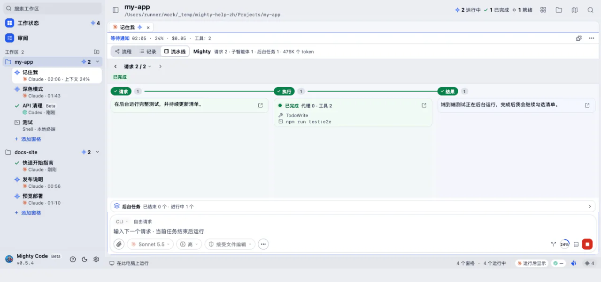
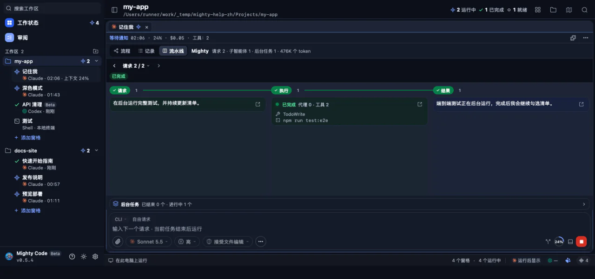
#结果卡片
请求结束后，结果卡片会整理出结果。Claude 的回答结束后请求即变为完成。如果它启动的后台任务（包括给已结束的子智能体发消息而重新唤醒的）仍在运行，或已结束但 Claude 还没有回答它的通知，结果卡片会变成等待色的等待通知块：在目前的回答下面，每个任务显示完成后通知或通知已送达，并显示“通知 1/2”这样的已收到通知数。在此期间，Mighty Pet 和窗格标题显示等待通知。所有通知都得到回答后，它会变为最终结果。Claude 收到后台任务的通知后再次回答时，这段回答不会接在请求的结果后面，每一次回答都会打开一个新的图表（后台任务）。如果同一请求的其他后台任务仍在运行，这段回答的卡片标题会显示“目前的结果 · 正在等待 N 个后台任务”，告诉你还剩几个。如果结果中提到了文件，可以用显示结果中提到的文件按钮打开文件列表。点击块中的文件路径会弹出预览。最新的结果卡片会适应窗格大小；如果你手动调整过大小，会出现适应窗口按钮。 如果是请求更改过的源代码或 Markdown 文件，预览标题处会出现 更改 | 完整文件 切换，并先显示更改：只显示更改的行及其前后 3 行，旁边标有旧行号和新行号，添加的行为绿色背景，删除的行为红色背景。源代码按语言着色，行内更改的词会单独高亮。上方一行的单栏 | 左右并排切换可在单栏显示和新旧内容左右并排显示之间切换（会记住所选显示方式）。完整视图中的源代码也以同样方式着色。上方一行说明比较的对象：从结果文件列表或区块中打开时，是该请求第一次更改文件之前的内容（与本次请求之前比较），没有该原始内容时则是最后一次提交。没有更改时不显示切换，只显示整个文件。
同一请求的后台任务之后 Claude 再次回答时，前一个结果卡片的标题变为中间结果，并附上开启该回答的任务名称(例如"中间结果 · Mac 构建")。只有请求真正的最后一个结果才是最终结果。最后的结果卡片附有成果列表。应用在请求开始时、每个清单步骤完成时、后台任务的回答结束时以及运行结束时为工作文件夹拍下 git 快照，并按步骤汇总其间更改的文件。无论代理是用编辑工具还是用命令修改，都一样；Codex、Gemini、opencode、Hermes 和 pi 窗格也一样(步骤就是各个工具调用的窗格，整个运行算作一组)。用按步骤 | 按文件在按步骤分组和按文件列表之间切换。分组达到五个或以上时只展开最后两个，每组最多显示五行，其余用“再显示 N 个”展开。同一文件夹有三个或以上文件时归到文件夹名下，文件超过二十个时出现搜索框。点击文件名打开预览；点击右侧的 +/− 数字，会在下方显示该步骤对该文件的更改。回答中提到的文件接在其后。快照只在 git 仓库内的文件夹中拍摄，不会向仓库的 .git 写入任何内容，而是保存在应用数据文件夹的 snapshots 中，14 天未使用的会被删除。
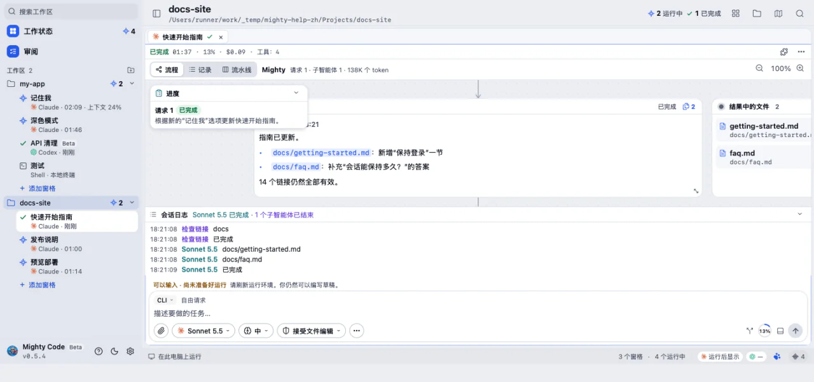
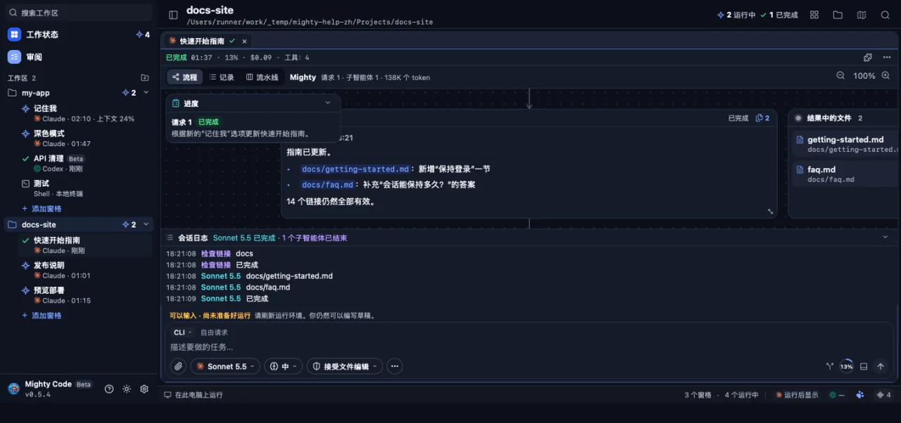
#审阅请求更改
Claude 窗格中的请求用 Edit、Write 或 MultiEdit 修改文件时，会保存每个文件修改前的内容。这样的请求结束后，结果卡片的标题栏会出现 审阅或撤销此请求的更改 按钮，点击即可打开 审阅请求更改：左侧是该请求修改的文件及增删行数，右侧是所选文件与请求前内容相比的更改。
- 点击更改中的某一行即可在该行留下意见。点击“将 N 条意见放入输入框”后，这些意见会带上文件和行位置，作为一条后续请求追加到输入框已有内容之后，不会立即发送。
- 勾选文件，点击“撤销所选 N 个”并确认后，这些文件会恢复为请求前的内容。请求新建的文件会移到废纸篓（Windows 上为回收站）。文件保留当前的编码和权限；请求之后你手动做的修改也会一并丢失。
- 如果之后的请求也改了同一文件，需要先撤销那个请求。已不存在、无法作为文本读取（超过 1 MiB 或二进制）或已与请求前相同的文件不会被撤销。
- 每个窗格保存最近 20 个请求的原始内容。Shell 命令修改的文件、其他代理的窗格以及远程工作区的窗格没有此按钮。
- 右键单击更改中的某一行，会在外部编辑器中打开该文件的这一行；标题栏的按钮(在编辑器中打开)打开所选文件(在编辑器中打开)。
04风格
风格是预先定好请求方式的工作流程。它备有阶段和按钮，能让较长的任务按既定顺序推进。不使用风格时，就像平常一样自由地发送请求（CLI）。
#选择风格
风格用于 Claude 窗格（Mac 和 Windows）。
- 打开输入框上方的风格菜单（请求风格）。
- 选择一种风格。要回到自由请求，请选择 CLI。
选择结果按窗格保存。运行期间无法更改。如果缺少风格所需的插件或工具，会显示安装按钮。点击后，安装命令会填入新的终端窗格，Enter需要你自己按。
内置风格的阶段名称和按钮目前只有韩文。
#内置风格
| 风格 | 作用 |
|---|---|
| Ouroboros | 先通过访谈明确目标，再按种子 → 执行 → 评估 → 进化的顺序推进。第一个请求就是访谈。需要 Ouroboros 插件和 uvx。 |
| Claude 计划（클러드 플랜） | 每个新请求都以 Claude 的计划模式开始。批准计划卡片后开始执行。清单进度和后台任务以小组件形式显示。 |
#计划卡片
Claude 在计划模式（或 Claude 计划风格）中完成计划后，会弹出计划卡片。
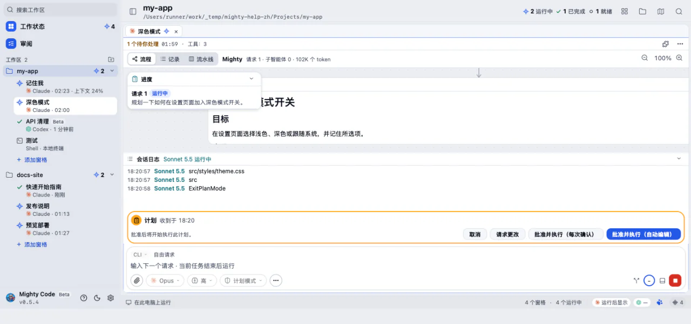
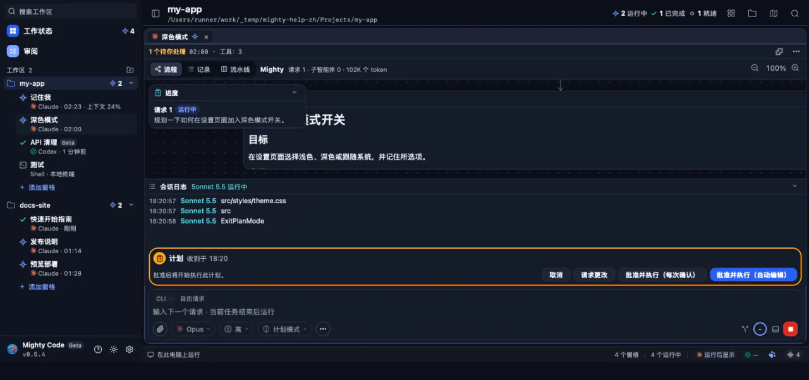
- 阅读计划。点击展开可以像文档一样放大查看。
- 选择其中一项：
- 批准并执行（自动编辑）：批准后，文件修改不再询问，直接进行。
- 批准并执行（每次确认）：批准后，每项操作都需要确认。
- 请求更改：写下需要修改的地方并点击发送更改请求，Claude 会重新制定计划。
- 取消：拒绝该计划并停止本次任务。
在 Mighty 流程中，计划显示在请求下方的块里，四种答复位于输入区域（使用风格时位于风格面板中）。计划块会像结果卡片一样适应窗格大小；如果你手动调整过大小，会出现适应窗口按钮。在记录中，计划和答复会一起显示在输入框上方的一张卡片里。
Mighty Pet 也会显示完成的计划：收到的时间和完整的计划，计划较长时可以在气泡内滚动。可以直接在 Mighty Pet 上点击批准并执行（自动编辑）、批准并执行（每次确认）或取消。点击请求更改会在一个小窗口中打开计划，供你填写修改内容；点击查看计划…会在同一个窗口中放大阅读计划。这个窗口带有全部四种答复，答复计划后窗口会自动关闭。
已答复的计划会保留在记录中，可以再次查看。
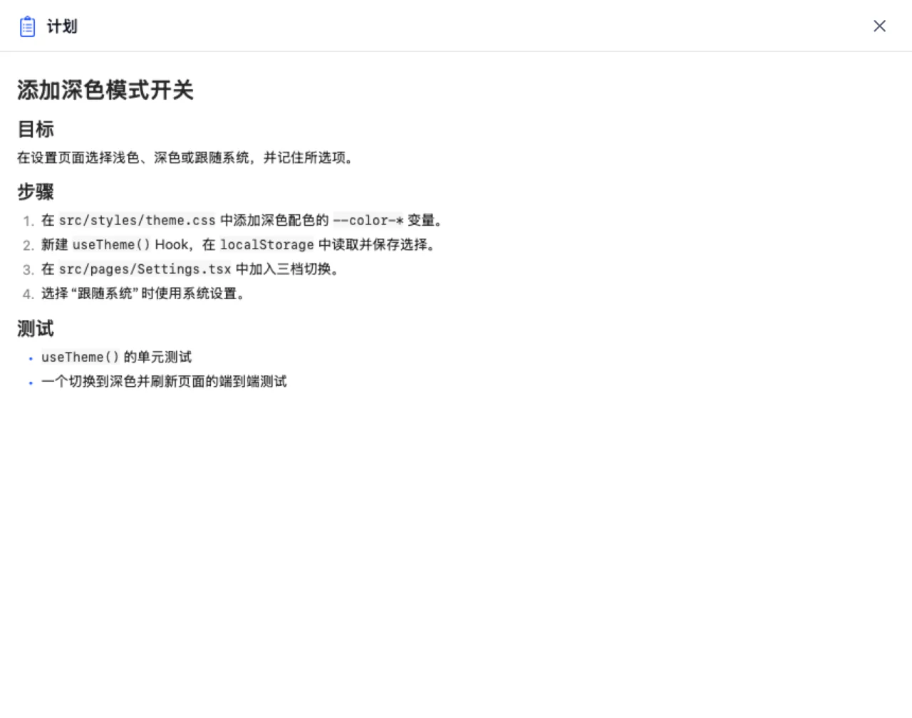
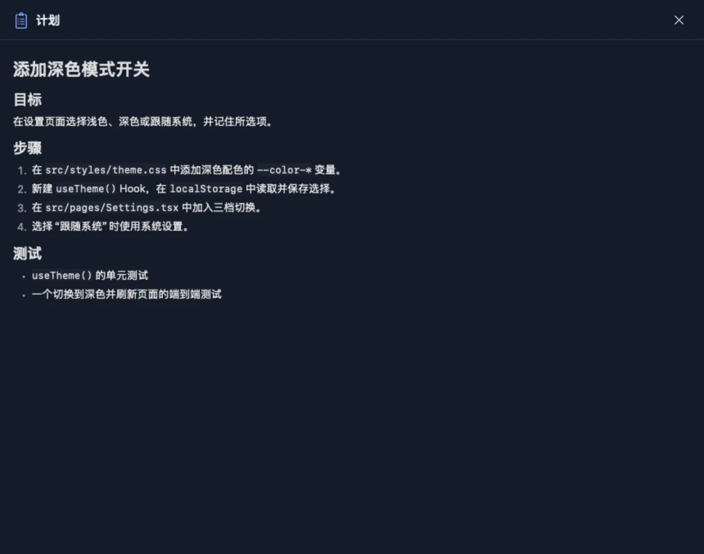
#添加其他风格
除了内置风格，也可以使用以文件形式提供的风格。
- 在设置… → 风格中点击从文件注册风格…。仓库
.claude/mighty-styles/中的风格会被自动发现。如果列表不对，请点击刷新。 - 新风格需要先检查一次内容。用查看内容按钮确认来源、自动允许的工具、安装命令和所有按钮。
- 确认无误后，点击允许。
风格文件发生变化后，需要重新确认。要阻止已允许的风格，请在同一位置点击阻止按钮；要解除，请点击解除阻止按钮。要从列表中删除，请点击删除按钮。把指针放在风格名称上，可以看到它的 ID 和哈希。
自动允许工具的风格会在不询问的情况下运行这些工具。请仅在信任其来源时允许。
05批准、提问与登录恢复
智能体在工作中需要你做决定时，窗格中会弹出卡片。回答卡片后，任务就会继续。在工作状态、Mighty Pet 和手机上也能看到同样的请求。
#批准权限
当智能体想做权限范围以外的事（运行命令、修改文件等）时，会弹出批准卡片。
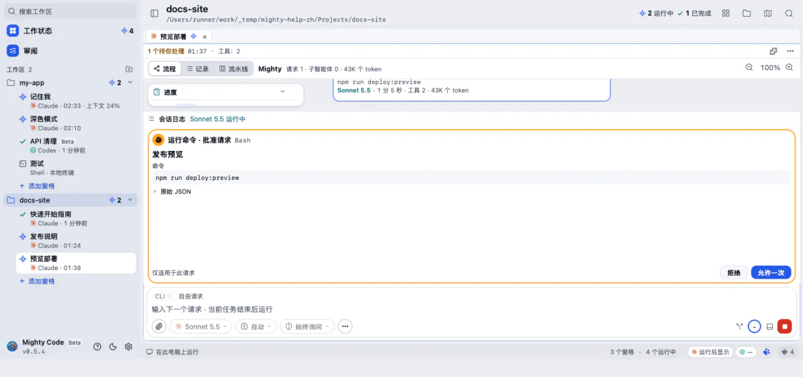
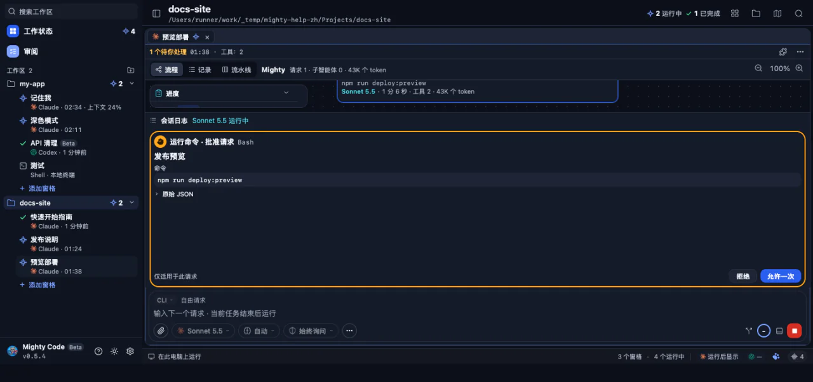
- 阅读卡片，了解它要做什么。命令和文件路径显示在框中，准确的输入可以在原始 JSON 中查看。
- 点击允许一次或拒绝。
批准仅对这一次请求有效，不会创建今后持续允许的规则。
批准卡片会在 Claude 窗格（始终询问 等）、Codex 的请求批准权限以及 opencode 窗格中除完全访问外的所有权限下弹出。在 Hermes 窗格中，文件修改和危险命令会弹出卡片。在其他权限下，是允许还是阻止取决于 CLI 设置。Antigravity 的工作方式不同，会用自己的方式询问。
#Antigravity 的权限卡片
Antigravity 在工作过程中无法向应用提问。遇到必须询问的操作（运行命令、写入文件等）时，它只跳过该操作，先结束这一轮，再把所有被拒绝的操作汇总到一张卡片里询问。默认权限权限下也会弹出，手机上会出现同样的卡片。
卡片会列出每一项被拒绝的操作。每项都会显示类型（命令、地址、文件 等）、命令、地址或路径，以及用于允许它的规则。
- 先看被拒绝的是什么。
- 选择一个按钮。
- 允许一次：为被拒绝的操作临时给 Antigravity 添加一条规则，并在同一个对话中继续。随后的运行结束时（完成、失败、停止或关闭应用），应用只会删除自己添加的规则。
- 始终允许：把同一条规则保留在 Antigravity 的设置中（
~/.gemini/antigravity-cli/settings.json的permissions.allow），下次无需询问即可运行。在 Windows 上该文件是%USERPROFILE%\.gemini\antigravity-cli\settings.json。 - 拒绝：关闭卡片，不继续运行任何内容。
允许后会在同一个对话中继续。如果窗格正忙于其他事情，继续运行的请求会进入队列。
规则按开头匹配。命令规则会允许以该文本开头的所有命令（command(git status) 也会允许 git status --short），指向文件夹的文件规则会允许其中的所有文件。允许一次的规则也会写入 Antigravity 的全局设置，因此规则存在期间，它适用于此电脑上的所有 Antigravity 运行（其他窗格和工作区，以及终端中的 agy）。始终允许的命令规则会允许其后附加的任何参数，因此对于能通过参数做其他事情的命令（如 find … -exec、curl … -o），请尽量选择允许一次。
串联命令（;、&&、||）、使用管道（|）、重定向（>、<）、命令替换（反引号、$(）、后台运行（&），或删除数据、提升权限的命令（rm、sudo、git push --force、git reset --hard、git clean、kill 等）只能允许一次。卡片上的始终允许会关闭并显示原因；手机上不会显示该按钮。
含有字母、数字、空格和 ._/:=@+,- 以外字符（引号、$、~、%、\ 等）的命令也只能允许一次，因为始终允许的规则会允许以相同文本开头的所有命令；含有不可见字符、改变文字方向的字符或普通空格以外空白的命令则不会生成任何规则。文件规则只会为此电脑自身磁盘上的普通路径生成（在 Windows 上为固定驱动器上的 C:\… 这类驱动器路径），不会为 \\server\share 这类网络路径生成，应用也不会去查找这类路径。地址规则只在主机名普通时（不含 @、\、%、空格或非 ASCII 字符）生成，卡片显示的是浏览器所读出的主机名。
应用不会为含有 * 或括号的命令、指向整个磁盘（/）或主文件夹（~）的规则创建规则。也不会为 Antigravity 自己的设置文件夹（~/.gemini）或应用数据文件夹之内、或其上层文件夹（如主文件夹）创建文件规则，因为那里的规则会让 Antigravity 改写自己的权限。提到 .gemini 的命令、单独运行或直接传入代码的 shell 和解释器（bash、python3 -c …、node -e …、cmd /c …），以及运行其他命令的包装程序（npx、xargs、timeout、env 等）也只能允许一次，因为 command(bash) 会允许以 bash -c 开头的任何命令。卡片会显示具体原因。这类操作会显示为无法用规则允许的操作。
这与 Claude 不同。Claude 会在执行前停下来等待你的回答；Antigravity 则先结束这一轮，之后再询问，你允许后才继续。因此卡片出现时，其余工作可能已经完成。
没有规则可以允许的操作仍会显示在卡片上，并附有更改权限模式的提示。只含这类操作的卡片只有拒绝一个按钮。如果 Antigravity 的设置文件无法读取或不是 JSON，应用不会改动它，并在卡片上显示原因。应用只会在 permissions.allow 下添加和删除规则，其他设置保持原样。如果临时添加的规则删除失败，应用会稍后再试，下次打开应用时也会删除。
远程工作区中的 Antigravity 窗格会修改运行它的那台电脑的设置。每张卡片的允许只能使用一次，并且只有那台电脑开启了允许远程使用完全权限和执行命令时，才接受始终允许。
#回答问题
Claude、pi、opencode 或 Hermes 给出选项向你提问时，会弹出请求选择卡片。不带选项、要求填写答案的问题只显示输入框。
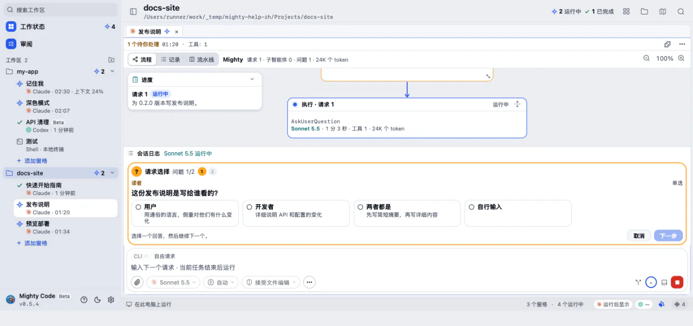
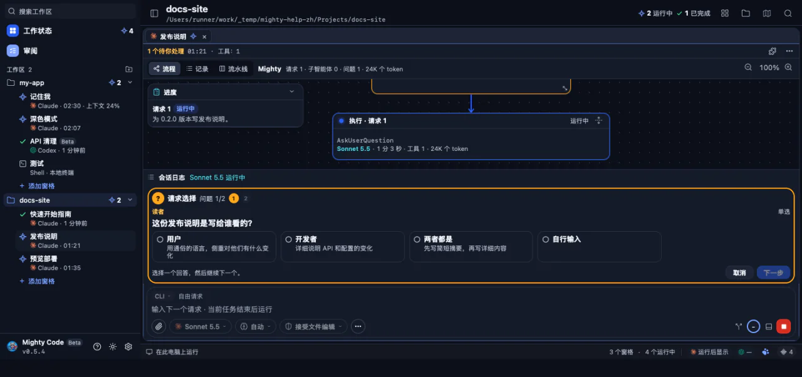
- 阅读问题并选择答案。有些问题可以多选。
- 如果没有合适的答案，请在自行输入中自己填写。
- 如果有多个问题，用下一步按钮进入下一题。
- 全部回答后，点击发送回答。只选择答案不会发送。
#终端等待输入时
当智能体在终端中运行的命令（或你在回复中的 shell 代码块上按 运行 运行的命令）等待输入时，该智能体窗格的输入框上方会出现 终端正在等待输入 卡片。不必切换到终端窗格，直接在卡片上回答，回答就会原样输入到终端。手机上同一窗格也会出现同样的卡片。
- 是/否问题（如
(Y/n)）：按 是 或 否。只按 Enter 时的回答会标上（默认）。 - 密码：在隐藏的输入框中输入并按 发送。输入内容不会显示，也不会留在对话记录中。
- 文本输入：输入后按 发送，或按 只按 Enter 接受默认值。
- 从列表中选择：用 向上、向下 移动，再按 选择。
卡片会在命令输出暂停片刻后出现，回答后、命令再次输出或结束时消失。智能体不会替你回答。你也可以直接在终端窗格中输入（显示终端）。
#登录断开时
CLI 登录过期导致请求失败时，输入框上方会出现登录恢复卡片。
- 点击重新登录。
- 在打开的浏览器中完成授权。如果浏览器显示了代码，请将其粘贴到卡片中并点击提交。
- 登录完成后，失败的请求会自动重新发送。
如果已经在其他地方登录，请点击重新发送。如果浏览器登录有困难，请使用在终端中登录。
macOS Antigravity、pi、opencode 和 Hermes 在终端中登录。登录终端会在失败的窗格旁边打开：Antigravity（agy）会打开浏览器，请用 Google 账户登录；pi 则在终端中输入 /login，选择订阅或输入 API 密钥；opencode 会运行 opencode auth login，先选择提供商，再登录或输入 API 密钥；Hermes 会运行 hermes model，先选择模型提供商并登录，再选择默认模型。确认登录后，失败的请求会自动重新发送。登录后该终端仍保持打开。
Windows 在 Windows 上，Antigravity、pi、opencode 和 Hermes 同样在终端中登录。登录终端会在单独的窗口中（若已安装 Windows Terminal，则为新标签页）于失败窗格的文件夹中打开，在终端中的操作与 Mac 相同：Antigravity（agy）会打开浏览器，请用 Google 账户登录；pi 则输入 /login，选择订阅或输入 API 密钥；opencode 会运行 opencode auth login，Hermes 会运行 hermes model。确认登录后，失败的请求会自动重新发送。应用不会关闭该终端。
打开组件标签页中的登录断开时自动重新登录后，登录一断开就会立即重新开始登录。
#后台任务
Claude 有时会在后台运行耗时较长的命令或子智能体。这时即使 Claude 的回答已经结束，任务也仍在进行。
- 后台任务显示在图表上方进度面板的后台组中（从请求开始时就显示）。组标题旁的“1/3”表示仍在运行的任务数和本次请求启动的任务总数。每一行显示状态标记、类型（命令或子智能体）、命令或提示的第一行以及用时；把鼠标放在某一行上可以看到完整内容。
- 任务结束时会通知 Claude，Claude 收到结果后继续回答。结束的任务会变为已结束标记，并一直留在组中，直到发送下一个请求。
- 运行期间，后台任务不会画在 Mighty 视图的请求里，只在进度面板中。手机上，Mighty 视图上方有一行折叠的后台任务，显示已结束和仍在运行的数量，例如“已结束 1 个 · 进行中 2 个”，展开后是仍在运行的任务的行。
- 任务结束、通知送达 Claude 后，请求本身不会增加任何内容；Claude 的每一次回答都会打开一个新的图表。标题以已结束的工作命名，例如“后台工作已完成 · 代码审查代理”；多项一起结束时缩写为“… 及另外 N 项”。图表里有已结束任务的后台任务块（命令、结束状态、摘要）和 Claude 的回答。它不是请求，所以不占请求编号。在流程中它是最下方的一张新卡片；在记录中它是新增的一行，在流水线中它是末尾新增的一张卡片（看板）。没有写明具体内容的通知，除非 Claude 作出回答，否则不会打开图表。 在所有通知都得到回答之前，原请求的结果卡片会保持为等待通知块（结果卡片）。
- 在后台启动的子代理也一样。它结束后，Mighty 视图中它的块会变为已完成、失败或已停止（应用在它结束前重启的也算已停止），它交回的最终报告会成为该块的结果。它在运行途中发来的消息会追加到块的记录里，不会让块结束；Claude 对这条消息的回答会单独显示在一个子代理消息图表中。同一个代理接连发来的消息及 Claude 的回答会接在同一个图表里。Claude 对其结束的回答会显示在后台工作已完成图表中。
- 此时发送的请求默认进入队列，在后台任务结束后开始。要立即开始，请点击停止：队列会保留，其中的第一个请求接着开始。在开启了Mighty 编排、位于 git 仓库中的窗格里，可以按⌘Enter（Windows 上为CtrlEnter）立即在新的 worktree 中运行；如果在输入框下方的运行时发送到中选了代理，Enter也会立即在该代理的新 worktree 中运行（运行时发送）。
- 折叠进度面板时，后台组也会一起折叠。
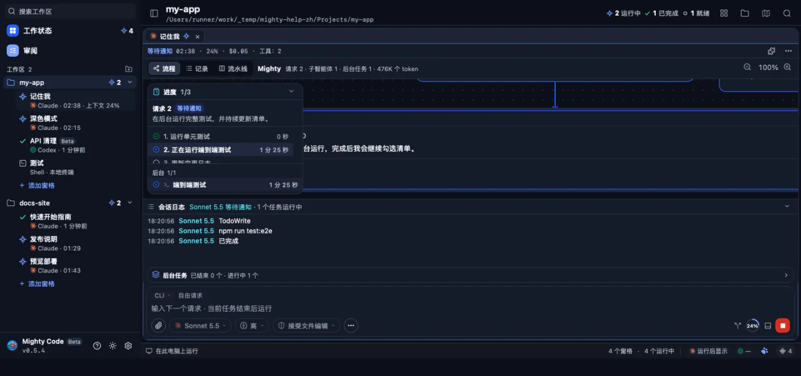
06Mighty 编排
借助 Mighty 编排，一个代理窗格在工作的同时，可以把别的工作交给旁边的子窗格一起推进。子窗格运行与父窗格相同的代理（Claude、Codex 或 Antigravity）；也可以运行三者中的另一个（Codex 和 Antigravity）。每个子窗格都在自己的 git worktree 和分支中工作，因此不会动到彼此的文件；完成后，在侧边栏的卡片上把结果合并到父窗格的分支。此功能以前叫作智能体委派。
打开子窗格有两种方法。
- 亲自启动：在运行中的 Claude 窗格，或处于子窗格能更改文件的模式的 Codex、Antigravity 窗格（Codex 和 Antigravity）里写下下一个请求，按 ⌘Enter。请求会立即在新 worktree 的子窗格中运行（在新的 worktree 中运行）。
- 让 Claude 分工：请 Claude（或 Codex）把工作拆开交给子窗格。代理会创建子窗格、阅读报告，并一直做到合并（让 Claude 分工）。
这是实验性功能。默认开启，可以在设置中关闭。请先在练习用的仓库中试用。
#概览
亲自启动时的流程如下。
- 把一个 git 仓库文件夹作为工作区打开，在 Claude 窗格中交给它一项工作。
- Claude 工作期间，写下下一个请求并按 ⌘Enter。正在运行的任务继续进行，这个窗格旁边会打开一个子窗格，立即运行你的请求。
- 子窗格在侧边栏中缩进一格列在父窗格下方，旁边显示它的状态。
- 子窗格完成工作、提交并留下报告后，状态变为已报告。
- 点击子窗格卡片上的合并按钮，把结果放进父窗格的分支。
- 合并后，会询问是否立即丢弃该子窗格。选择丢弃会清理子窗格及其 worktree 和分支。已合并的内容保留在父窗格的分支中。
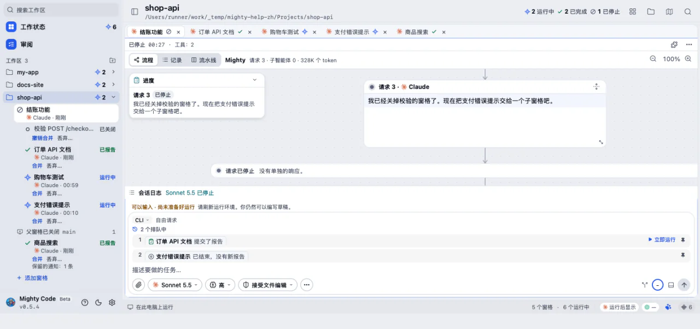
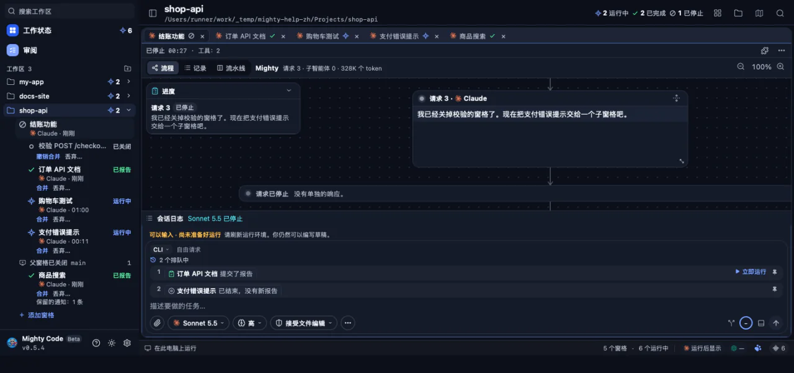
| 想做的事 | 方法 |
|---|---|
| 在当前任务之后接着运行 | Enter（运行时发送到为队列时，默认） |
| 与当前任务分开，立即运行 | ⌘Enter 或在新 worktree 中运行按钮，运行时在运行时发送到中选好代理后按 Enter，或队列行的立即运行按钮 |
| 把结果放进父窗格的分支 | 卡片上的合并按钮 |
| 撤销合并 | 卡片上的撤销合并按钮 |
| 丢弃结果 | 卡片上的丢弃…按钮 |
#在新的 worktree 中运行
在 Claude、Codex 或 Antigravity 窗格运行时写下请求，按 ⌘Enter，或点击停止按钮旁的圆形在新 worktree 中运行按钮（分支图标）。正在运行的任务不受打扰，你的请求会立即在拥有自己 worktree 的新子窗格中运行。除非你在此期间已经开始在父窗格中输入，新窗格会立即显示出来。
- 在运行中的窗格里，Enter 默认会把请求放入队列，等当前任务结束后再运行。如果在运行时发送到中选好了代理，Enter 也会立即在该代理的新 worktree 中运行（见下文）。输入框的提示文字会说明 Enter 现在的作用。
- 只有在能创建 worktree 的地方才会使用新的 worktree：必须是检出了有提交的分支的 git 仓库。在其他地方（不是 git 仓库、还没有提交、检出的是提交而不是分支），⌘Enter 会像 Enter 一样把请求放入队列。
- 子窗格从父窗格的最后一次提交开始。会创建分支
mighty/<子窗格 id>，worktree 位于项目文件夹之外（Mac 上为~/.mightycode/worktrees/<子窗格 id>，Windows 上为%USERPROFILE%\.mightycode\worktrees\<子窗格 id>），不会动到父窗格的工作。父窗格文件夹中尚未提交的更改不会带给子窗格。 - 与窗格相同代理的子窗格以父窗格的权限模式运行，并使用父窗格的模型和思考强度。在每个请求都以计划模式开始的样式中，它以计划模式开始。它以与父窗格相同的视图打开；如果父窗格在 Mighty 视图中使用某个样式，它也以同一样式开始（样式的进度从子窗格的第一个请求起单独计算）。附件也会一起带上。
- 第一条消息先是你输入的文字，随后应用会告诉子窗格在哪里工作，并要求它完成后提交并写入 REPORT.md，这样才能在卡片上合并。斜杠命令（以
/开头的文字）会按你输入的样子单独运行，应用的说明则作为子窗格的下一个请求随后发送，因此不会变成命令的参数。 - 若要用另一个代理运行请求，请在窗格运行时，在输入框底部一行的运行时发送到中选择 Claude、Codex 或 Antigravity（例如“worktree · Codex”），再按 Enter 发送。只有附件、没有文字的请求会放入队列。⌘Enter（Windows 上为 CtrlEnter）和在新 worktree 中运行按钮始终使用窗格自己的代理。灰色的项目会说明无法运行的原因：其 CLI 未安装或未登录（请在设置… › 组件中查看）、在窗格模式允许的范围内没有能更改文件的模式，或你启动的 3 个子窗格已经打开。另一个代理的子窗格以它自己的模式中能更改文件、且不做窗格模式不允许之事的最宽模式开始（Codex 和 Antigravity），使用该代理的新窗格会得到的模型和思考强度，并以窗格的视图打开，但不带样式。如果无法创建或启动该子窗格，你的文字和附件会放回输入框，对话中会说明原因；它们绝不会发给窗格本身。如果窗格自己的代理在当前模式下不能有子窗格，而另一个代理可以，则不显示在新 worktree 中运行按钮，运行时发送到中只能选择其他代理，⌘Enter 会把请求放入队列。
- 已经在队列中的请求，也可以用该行的立即运行按钮以同样的方式送出。在按钮前的代理选择中选择代理（默认是窗格自己的代理）。若无法创建或启动它的子窗格，请求会回到队列最前面，对话中会写明原因。
- 子窗格的用法和同一代理的普通窗格一样：可以回答批准卡片、发送后续请求、更改权限模式。
- 对于你亲自启动的子窗格，父窗格中的 Claude 不会收到通知，因为这不是父窗格交出的工作。父窗格的工具也不会列出它，也不能合并它或向它发送后续指示（
human_started）。请在侧边栏中查看它的状态，并亲自使用卡片上的按钮。 - 一个父窗格最多可以有 3 个打开的子窗格，并且需要 10 GB 可用磁盘空间。关闭或丢弃已完成的子窗格就能腾出名额。
- 无法创建子窗格或创建后无法启动时（已有 3 个打开的子窗格、磁盘空间不足、worktree 或第一次运行失败等），窗格的对话中会写明原因。随后，你的文字会像按 Enter 那样成为该窗格的下一个请求。队列已满时会放回输入框。启动失败的子窗格会一直列出，直到你在卡片上丢弃它。
- 在子窗格中，或关闭 Mighty 编排的窗格中，⌘Enter 也会像 Enter 一样放入队列。从手机发给运行中窗格的内容同样总是进入队列。人发送的内容不会插入正在运行的任务。
#窗格使用自己的 worktree
为了让同一工作区的多个代理窗格同时工作,工作区的代理窗格也可以像子窗格一样在自己的 git worktree 和分支中工作。各窗格不会覆盖彼此的文件,完成后在窗格上方的栏中合并到工作区分支。
- 何时在 worktree 中打开:当同一工作区已有在工作区文件夹中工作的代理窗格时,新代理窗格会询问:在新的 worktree 中打开、在新的 worktree 中打开，此工作区以后始终如此 或 在同一文件夹中打开。也可以在侧边栏工作区行的右键菜单 代理窗格的 worktree 中预先设置为 从第二个窗格起询问、从第二个窗格起总是 worktree 或 所有窗格(包括第一个)。设为 所有窗格(包括第一个) 时第一个窗格也在 worktree 中工作,工作区文件夹只接收合并(否则在工作区文件夹中工作的窗格会阻止合并)。从手机打开的窗格遵循此设置,设置为询问时在工作区文件夹中打开。继续之前会话的窗格总是在工作区文件夹中工作。
- 创建方式:与子窗格规则相同。从工作区分支的最新提交创建分支
mighty/<窗格 id>,worktree 位于~/.mightycode/worktrees/<窗格 id>。无法创建时(例如不是 git 仓库)会说明原因,只能在同一文件夹中打开。 - 告知代理:窗格的第一个请求会附上应用的说明,让代理知道自己的 worktree、分支和 PORT,并在完成后提交。合并由你在应用中进行。
- 栏:窗格上方显示分支和基础分支、基础分支没有的提交数(↑)、之后基础分支前进的提交数(↓)、未提交的更改文件数(±,点击查看)和 PORT(点击打开 localhost)。有未提交的更改时按钮变为 提交并合并,会连同新文件一起提交后合并。看起来像密钥的新文件或超过 5 MB 的新文件不会提交,并会提示。
- 冲突:合并因冲突被拒绝时会出现 请求解决冲突 按钮,点击后请代理合入基础分支、解决冲突并提交。
- 栏的菜单:查看更改(相对基础分支更改的文件及差异)、在此 worktree 中打开终端、在访达中显示 (Windows: 在文件资源管理器中显示)、撤销最近一次合并(仅当工作区文件夹此后没有变化时)、创建拉取请求…(确认后将分支推送到 origin,从不强制;如果是 GitHub 则打开创建拉取请求的页面)、丢弃(有子窗格基于此窗格的分支时会拒绝)。
- 准备:工作区行菜单中 复制到 worktree 的文件… 列出的文件(如
.env)会复制到新 worktree,然后运行一次 worktree 准备命令…。窗格的运行会获得PORT、MIGHTY_WORKSPACE_FOLDER和MIGHTY_WORKTREE环境变量，以及端口范围的变量。 - 关闭与列表:没有未合并工作的窗格关闭时会一并删除其 worktree。仍有工作的会保留,可在工作区行菜单的 worktree 列表… 中重新作为窗格打开、合并或删除。
- 审阅队列：工作结束且留下更改的 worktree 窗格和子窗格会汇集到审阅队列。栏菜单中的在编辑器中打开文件夹会在外部编辑器中打开窗格工作的文件夹。
#分叉对话
想保留已积累的上下文去尝试另一种做法时，可以在新的 worktree 中打开一个接续此窗格对话的新窗格。原窗格的对话和文件保持不变。
- 入口：窗格的 ··· 菜单 分叉到新 worktree，或结果块标题右键菜单中的 从这里分叉（到该请求为止的对话）。运行中的窗格需等结束后再分叉。
- worktree：从原窗格的 HEAD 创建
mighty/fork-<短 id>分支和 worktree。原窗格若在自己的 worktree 中工作，分叉会合并到同一个基准分支。复制的文件、准备命令、.mighty.yaml和端口范围与其他 worktree 窗格相同。 - 未提交的更改：勾选 带上未提交的更改（gitignore 的文件除外）（默认开启）时，原窗格改动的文件和新文件会带到新 worktree（用
git stash create在不改动原窗格的情况下生成，再应用到新 worktree）。gitignore 的文件不会带上。无法带上时原窗格保持不变，并在新窗格的记录中说明原因。 - 接续对话：Claude 和 Codex 会在第一个请求时由 CLI 把原会话复制为新会话（Claude
--fork-session，Codexexec fork），原会话不变。Antigravity、opencode、Hermes、pi，以及从非最后一个请求分叉时，第一个请求前会附上包含最后的请求、计划、最后的结果和改动文件列表的摘要（最多 12,000 字，看起来像密钥的行会被删除）。CLI 找不到原会话时，下一个请求会附上摘要。 - 显示：新窗格在侧边栏中缩进显示在原窗格下方，窗格上方有原窗格名称和跳转按钮。手机的窗格信息中也会以
forkedFrom带上。
#端口、运行操作和清理命令
仓库顶层的 .mighty.yaml 可以为每个 worktree 指定端口、运行操作，以及删除 worktree 时运行的清理命令。只有在 任务 面板中按下 信任并批准 之后，其中的命令才会运行；文件改变后需要重新批准。远程工作区不使用它。
version: 1
worktree:
setup: npm ci
teardown: docker compose down -v
teardownTimeoutSeconds: 60
ports: 10
run:
dev:
command: npm run dev -- --port $MIGHTY_PORT
e2e:
command: npm run test:e2e
concurrent: false
url: off- 端口范围:每个 worktree(包括主检出)会从 41000 起分配
ports个(默认 10 个)不与其他 worktree 重叠的端口，并跳过其他程序已在监听的端口。分配记录在应用数据文件夹的ports.json中，删除 worktree 时归还；应用关闭期间消失的 worktree 的端口会在下次启动时归还。ports: 0表示不分配。工具栏会显示:41010–41019这样的范围。 - 环境变量:准备命令、清理命令、运行操作、任务以及 worktree 窗格中的代理会获得
MIGHTY_PORT(第一个端口)、MIGHTY_PORT_COUNT、MIGHTY_WORKTREE_NAME、MIGHTY_ROOT_PATH(主检出)和MIGHTY_WORKTREE_PATH。命令中的$MIGHTY_PORT由 shell 展开(Windows 的 cmd 中为%MIGHTY_PORT%)。worktree.env不能设置这些名称。 - 运行操作(
run):任务 面板的 运行 部分会显示每个操作的状态以及 启动、停止 按钮。在输出中找到http://localhost:<端口>这样的地址时会显示为链接(url: auto，默认)，端口不在该 worktree 范围内时会标出 超出端口范围。url写成地址时显示该地址，写成off时不显示。concurrent: false的操作带有 独占 标记，启动时会先停止同一仓库其他 worktree 中运行的同一操作。运行中的操作也会显示在工具栏上。 - 清理命令(
teardown):放弃 worktree，或关闭已合并的窗格而删除 worktree 时，会先停止该 worktree 的运行操作，然后在 worktree 文件夹中运行清理命令。超过teardownTimeoutSeconds(默认 60 秒)仍未结束则停止。即使清理失败或被停止，worktree 也会删除，结果保留在窗格记录和 任务 面板中。 - 个人设置:在
.mighty.local.yaml中写相同的键时以它为准；运行操作按名称覆盖。
#让 Claude 分工
Claude 或 Codex 窗格（父窗格）也可以把工作拆开，交给其他窗格（子窗格）；除非它指定别的代理，子窗格运行它自己的代理。子窗格报告后，父窗格收到通知，阅读报告，再决定是否合并结果。Claude 和 Codex 父窗格在 Mac 应用和 Windows 应用中都可使用。
- 把一个 git 仓库文件夹作为工作区打开，再打开一个 Claude 窗格。这个窗格就是父窗格。
- 在请求中写明工具名称，例如“用 delegate 工具打开两个 Mighty 子窗格，把这件事分给它们”。如果只说“分开做”，Claude 可能会改用它自己内置的子智能体。
- 子窗格在父窗格旁边打开，并在侧边栏中缩进一格列在父窗格下方。
- 父窗格使用的工具有
delegate（交出任务；可以用agent指定子窗格的代理：claude、codex或antigravity）、list_children（子窗格列表）、child_status（读取状态和报告）、merge（合并）和follow_up（后续指示）。父窗格不能调用discard（丢弃），只有你能在卡片上丢弃。 - 每个子窗格都有一个分支
mighty/<子窗格 id>和一个 worktree（Mac 上为~/.mightycode/worktrees/<子窗格 id>，Windows 上为%USERPROFILE%\.mightycode\worktrees\<子窗格 id>）。子窗格从父窗格的最后一次提交开始。 - 交出的任务写在 TASK.md 中，结果写在 REPORT.md 中。这两个文件位于 worktree 内被 git 忽略的文件夹里，不会被提交。
- 子窗格的权限模式是父窗格选择的模式，不能比父窗格自己的模式更宽。另一个代理的子窗格不能做父窗格模式不做的事：只有父窗格的模式不经询问就更改文件时（接受编辑或 auto 模式的 Claude、请求批准 或 工作文件夹 模式的 Codex、允许编辑 模式的 Antigravity、完全访问 模式的任何代理）才不经询问更改文件，只有父窗格的模式能更改文件时才在询问后更改文件，只有父窗格的模式不经询问就运行 shell 命令时（auto 模式的 Claude、只读 或 工作文件夹 模式的 Codex、完全访问 模式的任何代理）才不经询问运行，只有在 完全访问 下才有完全访问权限。因此在运行 shell 命令前会询问的 Claude 接受编辑模式下，Codex 子窗格得到的是 请求批准，而不是 工作文件夹；计划模式或手动模式的 Claude 窗格完全不能有 Codex 或 Antigravity 子窗格。只有你能在两次运行之间，从子窗格输入框的权限菜单或手机设置中放宽它。
- 子窗格以与父窗格相同的视图打开（流程, 记录, 流水线 中相同的那一个）。如果父窗格在 Mighty 视图中使用流水线，子窗格也显示为流水线。
- 父窗格不能回答子窗格的批准卡片。子窗格中出现卡片时，请你在那个窗格中亲自回答。
- 一个父窗格最多可以有 3 个由
delegate工具创建的打开的子窗格，与亲自启动的 3 个分开计算，两者互不阻挡。子窗格不能再委派。已报告或已合并的子窗格只要窗格还开着也会计入这 3 个，关闭已完成的子窗格就能腾出名额。磁盘剩余空间不足 10 GB 时，交出任务会被拒绝。 - 父窗格通过通知得知子窗格的报告（通知和保留），用
follow_up发送后续指示（后续指示），用merge合并（合并）。
#Codex 和 Antigravity
Mighty 编排也适用于 Codex 和 Antigravity 窗格。默认情况下，子窗格运行父窗格的代理：Codex 窗格的子窗格是 Codex 窗格，Antigravity 窗格的子窗格是 Antigravity 窗格。
任何代理都可以有三者中任意一个代理的子窗格。可以在运行时的运行时发送到或队列行的代理选择中选择（在新 worktree 中运行），也可以让 Claude 或 Codex 父窗格用 delegate 的 agent（claude、codex 或 antigravity）指定。子窗格按下面所写的它自己代理的规则工作：它的模式，以及由谁提交它的工作（Claude 子窗格自己提交；Codex 或 Antigravity 子窗格的工作由应用提交）。通知和合并跟随父窗格的代理。delegate 会拒绝它不认识的代理（agent_unknown）、未安装或未登录的代理（agent_unavailable），以及不是子代理的模式、在其中无法更改文件的模式，或能比父窗格的模式做更多事的模式（模式的比较方法见让 Claude 分工）。
- 子窗格能工作的模式：子窗格以父窗格的权限模式启动，因此 Codex 和 Antigravity 窗格只有在子窗格能更改文件的模式下才会用 ⌘Enter 启动子窗格：Codex 为工作文件夹、请求批准或完全访问，Antigravity 为允许编辑或完全访问。在其他模式下，⌘Enter 会像以前一样把请求放入队列。
- Codex 窗格只有在工作文件夹或完全访问模式下才会获得委派工具：在只读模式下 Codex 会拒绝这些工具，在请求批准模式下它会以应用无法显示的方式请求批准。
delegate会拒绝无法更改文件的子窗格模式。只有当运行以完全访问模式开始时，Codex 才能调用merge，否则会被拒绝（merge_human_only），请在卡片上合并。运行中的 Codex 回合无法接收文字，因此发给运行中 Codex 父窗格的通知会在这次运行正常结束后作为下一次运行送达；如果因停止或错误而结束，则会被保留。 - Antigravity 窗格没有委派工具（Antigravity 只从其全局设置获取工具，而应用从不更改该设置），只能用 ⌘Enter、在新 worktree 中运行 按钮或运行时发送到启动子窗格。
- 除非处于完全访问模式，Codex 和 Antigravity 子窗格无法在自己的 worktree 中提交，因此会被告知保留更改。子窗格的运行在 REPORT.md 有变化时正常结束后，应用会把更改提交到子窗格的分支（
mighty: <子窗格 id> report r<n>），并以该提交记录报告；因停止或错误结束时，会等到下一次正常结束。被 .gitignore 排除的新文件、看起来像机密信息的新文件（.env*、*.pem、*.key、*.pfx、*.p12、*.ppk、id_rsa*、id_ed25519*、id_ecdsa*、id_dsa*、credentials*、secrets.*、.npmrc、.pypirc）以及超过 5 MB 的新文件不会提交，后两类会在子窗格中列出名称。提交使用你在 git 中设置的姓名和邮箱（没有时提交失败，并在窗格中说明），并且不签名。worktree 中有未解决的合并冲突时，应用不会提交任何内容，并在窗格中说明。 - 卡片的合并因冲突被拒绝时，只会请能够提交的子窗格（完全访问）解决冲突。否则请把子窗格切换到完全访问后在子窗格中请它解决，或在该 worktree 的终端中亲自解决冲突并提交。
- 把仓库的子文件夹作为工作区打开时，Codex 子窗格也可以写入 REPORT.md 所在的 worktree 顶层文件夹，Antigravity 子窗格会添加该文件夹。
#子窗格的状态
侧边栏会显示每个子窗格的状态。
| 状态 | 含义 |
|---|---|
| 创建中 | 正在创建 worktree 和窗格。 |
| 运行中 | 正在工作。 |
| 待你处理 | 正在等你回答批准或提问。 |
| 已报告 | 已留下 REPORT.md 并结束运行，可以合并。报告之后的运行若没有任何改动就结束，也保持此状态。 |
| 已合并 | 已合并到父窗格的分支。 |
| 已结束 | 运行结束，但没有新的报告。 |
| 已中断 | 因为退出应用，运行被中断。 |
| 启动失败 | 子窗格未能启动。 |
| 已关闭 | 窗格已关闭。在丢弃之前会一直留在列表中。 |
子窗格开始新的运行时，已报告状态会被清除；再次报告时会使用下一个报告编号。如果子窗格没有报告就结束了，请在子窗格中再次要求它提交并写入 REPORT.md。
#合并
把子窗格的结果放进父窗格的分支有两种方法。
- 卡片上的合并按钮：由你来点。亲自启动的子窗格只能用这种方法合并。能快进（fast-forward）时就快进，否则只创建一个合并提交。它会先检查冲突，拒绝时会在卡片上显示原因。 子窗格仍在工作、父窗格正在运行或父文件夹有未提交的更改时，不会拒绝，而是排队合并：卡片上显示它在等待什么，等这些结束后会自动合并。子窗格没有新的报告就结束时，排队会取消。如果创建子窗格时的父分支之后已合并到当前检出的分支（例如 main）或已删除，就合并到当前分支；父窗格的
merge工具也会这样跟随分支。 合并成功后，会询问是否立即丢弃该子窗格。选择丢弃会关闭子窗格并删除其 worktree 和分支；已合并的内容仍保留在父窗格的分支中，但这次合并将无法撤销。选择稍后则保留卡片。 因冲突被拒绝时，应用会请子窗格并入父分支、解决冲突、提交并重新报告。卡片上会这样提示，子窗格变为运行中。子窗格重新报告后会自动合并。这个请求每次报告只发送一次。子窗格现在无法开始运行时不会发送，卡片上只留下拒绝原因，下次合并时会再试一次。如果子窗格收到请求却没能开始，或者子窗格处于计划模式、只做了计划就结束了，请直接让子窗格解决冲突并重新报告。对于 Codex 和 Antigravity 子窗格，只有在完全访问模式下才会发送此请求（Codex 和 Antigravity）。 - 父窗格的
merge工具：只适用于交给 Claude 的子窗格，只做快进。父窗格要一起传入child_status给出的子窗格 head。子窗格尚未报告、子窗格或父窗格文件夹中有未提交的更改、子窗格的 head 已移动、父窗格的分支在此期间已经前进（分叉），或者父窗格的分支没有被检出时，合并会被拒绝，并且不做任何更改。这个工具是否会弹出批准卡片，取决于父窗格的权限模式。只有当运行以完全访问模式开始时，Codex 父窗格才能使用它，在其他模式下会以merge_human_only被拒绝，请在卡片上合并。
合并一个子窗格后，父窗格的分支会向前移动，所以其余子窗格通常会被 merge 工具以分叉为由拒绝。这时请用卡片上的合并按钮合并。
合并之后，在子窗格开始新的运行之前，即使关闭了窗格，卡片上也会保留撤销合并按钮。只有当父窗格的分支仍停在这次合并、父窗格空闲且没有未提交的更改时才能使用。撤销后，文件会回到合并之前的样子，窗格还开着的子窗格会重新变为已报告。
如果合并已完成，但委派记录没能保存，卡片会告诉你。合并保持不变，记录会在下次保存时重新写入。
#丢弃
卡片上的丢弃…按钮会删除子窗格的 worktree 和分支，连同尚未合并的工作一起删除。只有你能丢弃，父窗格不能。已合并的子窗格也可以在合并后立即弹出的询问窗口中丢弃（合并）。
- 确认窗口（要丢弃这个子窗格吗？）会列出嵌套在子窗格 worktree 中、将被一起删除的所有其他 worktree。
- 无法确认这份列表时，确认窗口不会出现丢弃按钮，也不会停止或删除任何东西。
应用绝不会自行删除尚未合并的工作。只有你点击的丢弃才会让未合并的工作消失。
#关闭窗格和清理
- 关闭已合并的子窗格时，如果它的工作已全部合并且没有留下更改，应用会清理它的 worktree 和分支（
git branch -d，从不强制删除）。否则只会关闭窗格，worktree 保留。 - 在合并之前关闭子窗格时，应用就不能再合并它了。卡片上只剩丢弃，分支和 worktree 会一直保留到你丢弃为止。
- 关闭还有打开子窗格的父窗格时，桌面应用会先询问（关闭这个父窗格？）。只关闭父窗格，子窗格继续工作。
- 父窗格已关闭的子窗格会作为卡片留在侧边栏的父窗格已关闭项目下面。它们的通知保留在卡片上并显示数量，也不再接收后续指示。
- 还有打开的子窗格，或者还有尚未清理的子窗格 worktree 的工作区，无法删除。
- Windows 如果子窗格的 worktree 中有目录联接（junction）或符号链接（例如用链接创建的
node_modules），关闭已合并的子窗格时应用不会清理，而是保留 worktree，以免顺着链接把它指向的文件夹也删掉。这时请用卡片上的丢弃…按钮删除：丢弃会先只移除链接本身，不会动链接指向的文件夹。
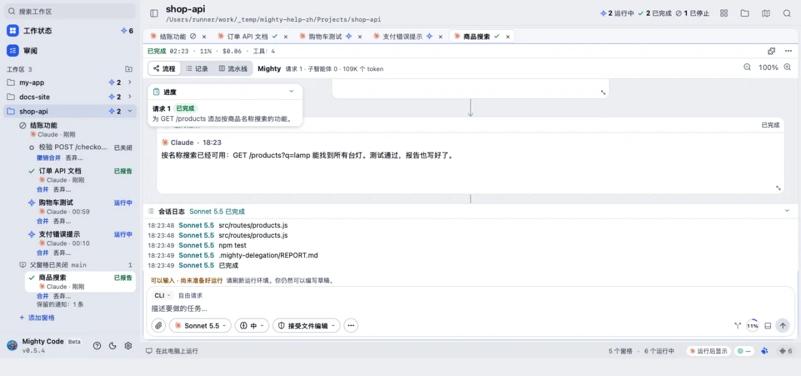
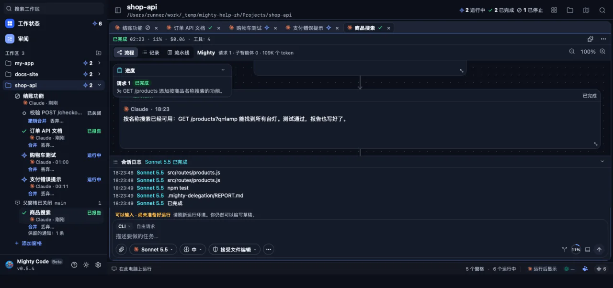
#通知和保留
交给 Claude 的子窗格报告或未能启动时，父窗格会收到一条通知。父窗格启动的运行（最初交出的任务或后续指示）没有报告就结束时，也会收到通知。通知只是一个以 [Mighty Code notice …] 开头的简短指引，报告内容由父窗格用 child_status 读取。亲自启动的子窗格不会发送通知。
- 父窗格正在运行 Claude 时，通知会直接送进这次运行，并在父窗格的 Mighty 视图中显示为橙色的委派通知块。在父窗格答完之后才到达的通知同样显示为这个块，Claude 对它的回答不会接在父窗格请求的结果后面，而是作为单独的委派通知图表打开。正在运行的 Codex 父窗格会在这次运行正常结束后，把通知作为下一次运行接收。
- 父窗格在打开应用后正常结束了上一次运行、现在处于空闲状态时，通知会开始它的下一次运行。
- 其他情况下通知会被保留：停止之后、出错之后、重新打开应用之后，以及 CLI 更新期间。一旦已有保留的项目，新通知也会排在其后保留，顺序不会乱。
保留的通知显示在父窗格输入框上方队列的最上面，是带图钉标记的行。这些行没有删除按钮，而且与普通的排队请求不同，停止或重新打开应用后也会留下。
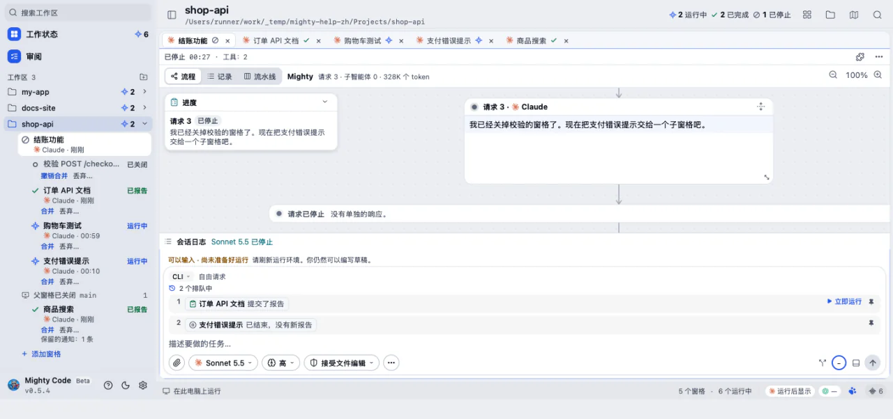
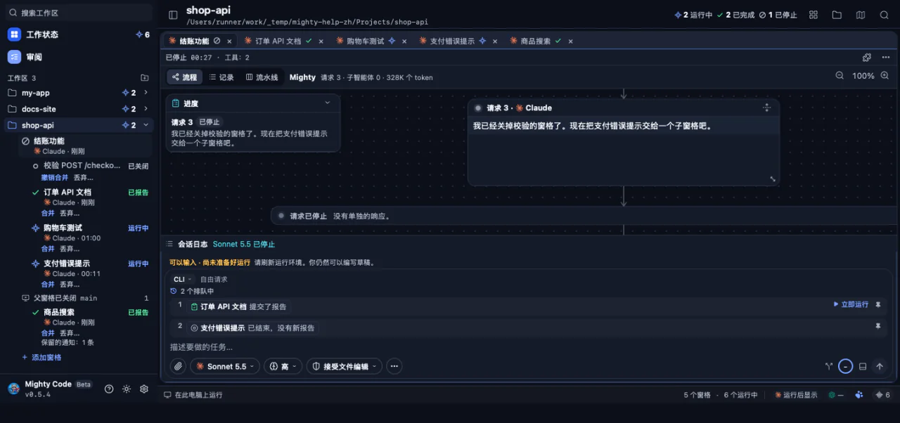
- 你下一次发送内容时，所有保留的项目会按从旧到新的顺序，排在你的文字前面，作为一次运行一起送出。
- 点击最上面一条保留行的立即运行按钮，会把所有保留的项目作为一次运行立即送到本窗格。其余保留的行没有这个按钮。打开新 worktree 的立即运行不会动这些保留的项目，它们仍为本窗格保留。有项目被保留时，本来可以直接送进正在运行的 Claude 的请求会保持灰色，直到保留的项目送出。
- 每条通知只会送达一次，重新打开应用也一样。保留的行也会显示在手机的队列中，从手机发送也会一起送出。
#后续指示
父窗格可以用 follow_up 工具给交给 Claude 的子窗格发送最多两条后续指示。后续指示按照与通知相同的规则送到子窗格，每条最多 48 KiB。你可以直接在子窗格的输入框中输入，没有次数限制。
#开启和关闭
macOS 除非你关闭，否则它一直开启。在设置的通用标签页代理窗格中切换Mighty 编排；无需重新打开应用，从下一次开始的运行起生效。同一个开关就是 defaults 键 delegation.enabled，因此在终端中运行下面的命令也能关闭它，运行 defaults delete dev.mightycode.native delegation.enabled 则重新开启。
defaults write dev.mightycode.native delegation.enabled -bool falsemacOS 以前的版本只有设置了该键才会开启，关闭的方法是 defaults delete …。现在这样做会让它保持开启，所以要继续关闭，请在设置中关闭Mighty 编排。
Windows 除非你关闭，否则它一直开启。在设置的通用标签页代理窗格中切换Mighty 编排；无需重新打开应用，从下一次开始的运行起生效。同一个开关就是 HKEY_CURRENT_USER\Software\MightyCode 下的 delegation.enabled 值（REG_DWORD）：为 0 时关闭，没有这个值或为其他值时开启。因此在命令提示符或 PowerShell 中运行下面的命令也能关闭它，运行 reg delete "HKCU\Software\MightyCode" /v delegation.enabled /f 则重新开启。
reg add "HKCU\Software\MightyCode" /v delegation.enabled /t REG_DWORD /d 0 /fWindows 早期版本只有把这个值设为 1 时才开启。那时留下的 1 会让它保持开启。
- 开启后，Claude 或 Codex 窗格每次开始新的运行时都会带上委派工具。已经在进行中的运行不会带上。
- 关闭后只会去掉工具，⌘Enter 会像 Enter 一样把请求放入队列。已有的子窗格、卡片和清理都照常工作。
#限制和支持范围
| 项目 | 限制 |
|---|---|
| 一个父窗格的打开子窗格 | 亲自启动的 3 个，delegate 创建的 3 个 |
| 委派深度 | 一层（子窗格不能再创建子窗格） |
一个子窗格的后续指示（follow_up） | 2 条，每条最多 48 KiB |
| 交出的任务（TASK.md、亲自启动的请求） | 64 KiB |
| 所需磁盘剩余空间 | 10 GB |
- 子窗格运行与父窗格相同的代理，也可以运行另一个代理（Codex 和 Antigravity）。Claude 和 Codex 窗格还可以用 delegate 工具创建子窗格；Antigravity 窗格没有工具，只能通过 ⌘Enter、在新 worktree 中运行按钮、运行时发送到和立即运行创建（Codex 和 Antigravity）。
- Mac 应用和 Windows 应用都默认开启，并在设置中提供开关（开启和关闭）。手机没有新的界面，保留的行也会显示在手机的队列中。
07终端和文件窗格
可以在智能体窗格旁同时打开终端和文件窗格。
#终端窗格
在工作区文件夹中打开的真实终端。
- 选择添加终端窗格（⌘T），或选择添加窗格 → 新建终端。
- 直接输入命令。
Shell 退出后，请点击重新启动。之前的命令记录可以在窗格标题栏 … 菜单的之前的命令记录…中查看，右键点击窗格标题栏后的之前的命令记录也一样。退出应用后，终端不会重新打开。
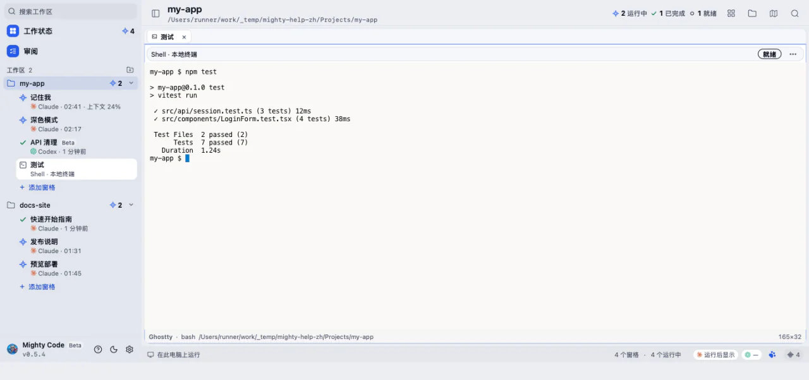
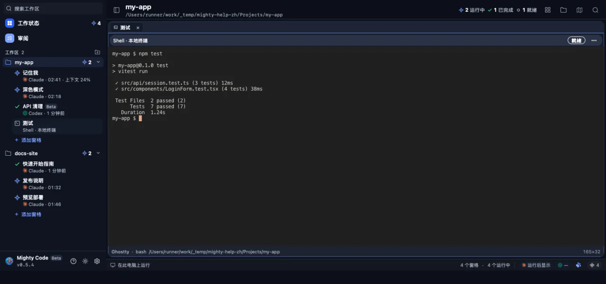
#通知与响铃
终端窗格里的程序或应用不解析的 CLI 发送通知或响铃时，会在该窗格上标记。通知支持 OSC 9（printf '\e]9;构建完成\a'）、OSC 777（notify;标题;正文）和 OSC 99（kitty，仅标题和正文）。报告进度的 9;4;… 不算通知。正文去掉控制字符后最多显示 200 个字符，每个窗格每秒只接收一条。
- 当你在看其他窗格或应用在后台时，侧边栏中该窗格的行和标签页会出现圆点，窗格边框会高亮。如果是通知，还会发送系统通知；响铃只做标记。
- 智能体窗格等待批准或回答问题时，以及 worktree 的 setup 失败时，也会出现同样的标记。工作状态会显示等待中的窗格数量，点击即可前往。
- 按 ⇧⌘U（Windows：CtrlShiftU）会前往最近发出提醒的窗格。再按一次前往下一个。菜单栏工作区菜单中的转到需要注意的窗格也一样。
- 查看该窗格后标记会消失。你正在看的窗格的通知既不标记也不发送系统通知。
- 如不想接收，请在设置中关闭接收终端通知。
#打开的端口与 PR
每 10 秒读取一次窗格的 shell、智能体、run 操作以及其下运行的程序打开的 TCP 端口，并显示在侧边栏的窗格行和 worktree 栏中。仅在应用窗口可见时读取当前工作区的窗格。点击 worktree 栏中的端口会在浏览器中打开 localhost。
worktree 窗格还会显示该分支 PR 的编号、状态（打开、草稿、已合并、已关闭）和检查结果（通过、失败、进行中）。PR 每 2 分钟重新读取一次，点击会打开 PR 页面。侧边栏较窄时，端口和 PR 只显示图标。
#智能体终端
当 Claude 或 Codex 运行需要你查看的命令（开发服务器、登录等）时，智能体窗格右侧会出现专用的终端窗格。你可以直接向运行中的命令输入内容。关闭该窗格后，命令仍会继续运行，直到退出应用；可以用窗格标题栏中的打开终端窗格按钮重新打开。
#文件窗格
用于浏览工作区文件的只读窗格，不会修改文件。
- 选择打开文件窗格（⇧⌘E），或点击工作区标题中的文件夹按钮。
- 在左侧列表中选择文件。用筛选名称查找名称，用方向键和Return移动。
- 在右侧查看内容。
| 文件 | 显示方式 |
|---|---|
| 源代码、文本 | 显示行号和语法高亮。大文件只显示前 1 MB。 |
| Markdown | 在预览和源码视图之间切换。超过 128 KB 的文件以源码显示。 |
| HTML | 在绘制为页面的预览和源码视图之间切换。 |
| 图片、PDF | 适应窗格、实际大小、放大、缩小。PDF 只显示第一页。超过 50 MB 的图片不预览，超过 1 亿像素的图片只能以适合窗口的大小显示。 |
| 其他 | 无法预览此文件。可以用在 Finder 中显示打开。 |
工作区以外的文件不会显示。如果文件有变化，请点击刷新。
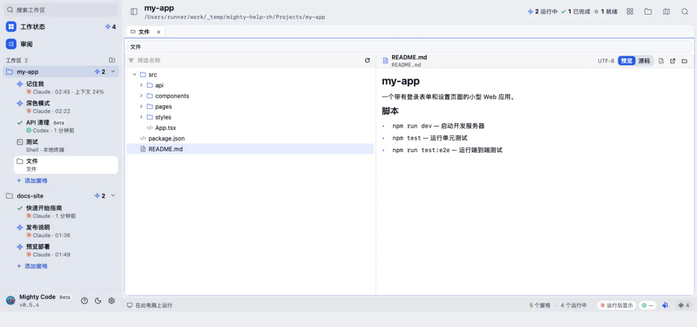
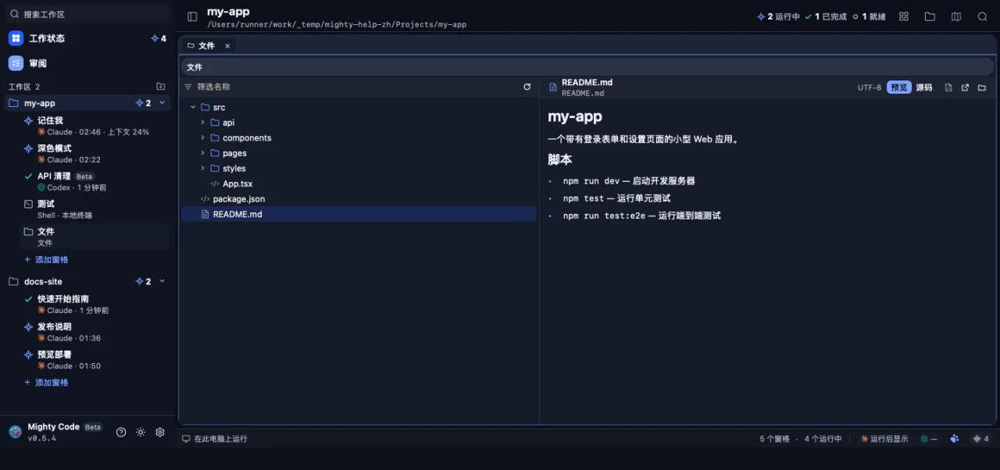
#在编辑器中打开
要修改文件，就在你常用的编辑器中打开它。知道行号的地方会直接跳到那一行。
- 文件窗格：预览标题栏中的在编辑器中打开按钮，以及在列表中右键单击文件或文件夹的菜单(在编辑器中打开文件夹)。
- 对话和 Mighty 流程：⌘-单击(Windows：Ctrl-单击)文件名，会在编辑器中打开该行，而不是预览。预览标题栏和结果文件列表每行上的按钮也一样。
- 查看更改：在审阅请求更改和 worktree 窗格的查看更改中右键单击某一行会打开该行，按钮则打开所选文件。
- worktree 窗格栏的菜单和审阅队列会打开 worktree 文件夹。
在设置的外部编辑器中选择编辑器。自动会按 VS Code、Cursor、Zed、JetBrains IDE(IntelliJ IDEA、WebStorm、PyCharm 等)、Sublime Text 的顺序使用找到的第一个。先在登录 shell 的 PATH 中查找命令(code、cursor、zed、idea、subl)，然后在 Mac 上查找“应用程序”文件夹中应用自带的命令，在 Windows 上查找常见安装文件夹中的程序。系统默认用文件的默认应用打开，不带行号，且永不打开可运行代码的文件。工作区或 worktree 之外的路径不会被打开。
#网页链接
回复中的网页链接以及智能体打开的网页，都会在默认浏览器中打开。
08设置
通过设置…（⌘,）或侧边栏底部的设置按钮打开。在左侧选择标签页，用关闭按钮或Esc关闭。设置会记住你上次查看的标签页。标签页的顺序是通用、模型、风格、远程连接、Mighty Pet 与提醒、组件、关于。
#通用
在通用标签页的显示中更改应用的外观。
- 主题：深色或浅色。也可以用侧边栏底部的按钮切换。
- 语言：应用的语言。请参阅更改语言。
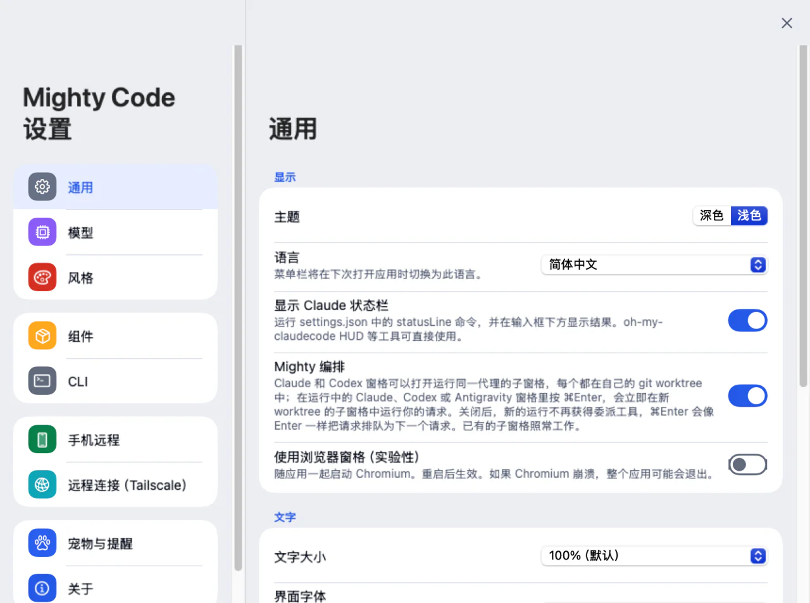
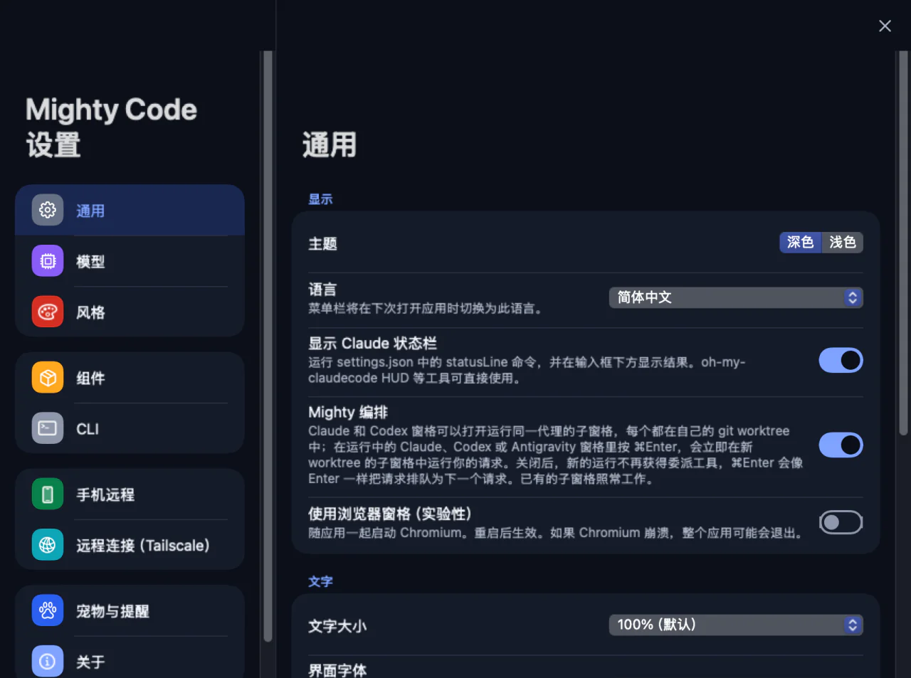
#文字大小与字体
在同一标签页的 文字 中更改整个应用的文字。
- 文字大小：在 85% 到 150% 之间选择。对话、输入框、侧边栏、设置和终端会一起放大或缩小。
- 界面字体：应用界面的字体，例如侧边栏、菜单、按钮和设置。从这台电脑上安装的字体中选择；系统默认 是操作系统的默认字体（Mac 上为 macOS 字体，Windows 上为 Segoe UI）。
- 对话字体：代理的回复、你发送的消息、输入框以及 Mighty 卡片和看板正文的字体。选择 与界面相同 时跟随界面字体。
- 代码和终端字体：代码块、行内代码、工具输出和命令行以及终端窗格的字体。只列出等宽字体：已安装的等宽字体，以及已安装的 JetBrains Mono、D2Coding、Fira Code、Cascadia Code、Cascadia Mono、Consolas 等编程字体。最上面的默认值在 Mac 上代码使用 SF Mono、终端使用 Menlo，在 Windows 上使用 Cascadia Mono（没有时用 Consolas）。在 Mac 上，所选字体被删除时，终端会改回 Menlo。已打开的终端也会立即更改。路径、版本、数量等应用界面中的等宽文字仍使用系统等宽字体。
- 每种字体下方都会用该字体显示一行预览。
- 恢复默认 按钮把大小和三种字体恢复到最初的状态。
在 Mac 上也可以用“显示”菜单中的 放大文字（⌘=）、缩小文字（⌘-）和 默认文字大小（⌘0），在 Windows 上用 Ctrl= / Ctrl- / Ctrl0 更改大小（在 Windows 上光标位于终端窗格时，这些键由终端使用）。更改会立即生效，重新打开应用后仍然保留。
#代理窗格
同一标签页的代理窗格中是与代理窗格有关的设置和按键说明。
- 显示 Claude 状态栏：运行 Claude 设置中的状态栏命令，并将结果显示在输入框下方。
- Mighty 编排：默认开启。Claude 窗格可以在各自的 worktree 中打开子窗格，在运行中的 Claude 窗格里按 ⌘Enter 会在新的子窗格中运行你的请求。请参阅Mighty 编排。
- 请智能体提供进度清单：默认开启。开启时会附上一条简短指示，请 Gemini、Codex、opencode 和 Hermes 在工作时留下计划（清单），进度面板就会显示真正的计划步骤。窗格中的请求只保留你输入的内容。关闭时或没有收到计划时，面板把智能体正在做的事显示为步骤（Mighty 视图）。
- 外部编辑器：在编辑器中打开启动的编辑器。可选择自动(找到的第一个)、此电脑上找到的编辑器或系统默认。每次打开设置都会重新查找(在编辑器中打开)。
- 下方是按键说明：按 Enter 发送，按 ShiftEnter 换行。拖动标签页可与其他标签页合并，拖到边缘可拆分。命令运行窗格是交互式终端，在 Mac 上打开登录 shell，在 Windows 上打开 PowerShell（没有时为 cmd）。
#模型
在模型标签页的各阶段模型中，为整台电脑设置各工作阶段使用的模型。阶段包括计划、执行、审查和子智能体。
- 保持默认时，由 CLI 决定。
- 按窗格选择会使用窗格模型按钮中选择的模型。
- 列表中没有的模型名称，可以在已注册的名称中添加。如果该模型支持思考强度，请打开支持思考强度级别。
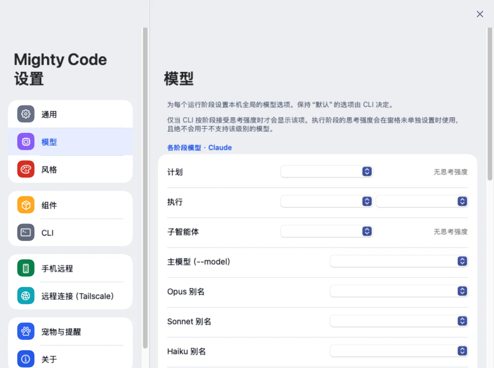
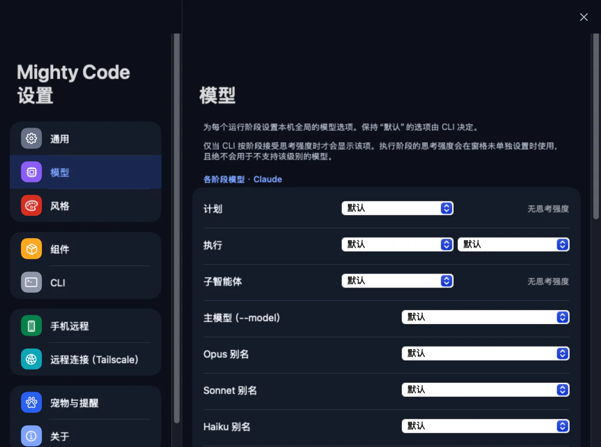
#风格
在风格标签页中管理风格列表：从文件注册风格、检查内容后允许或阻止。列表不对时，请点击刷新按钮。把指针放在风格名称上，可以看到它的 ID、哈希和数量。详情请参阅风格。
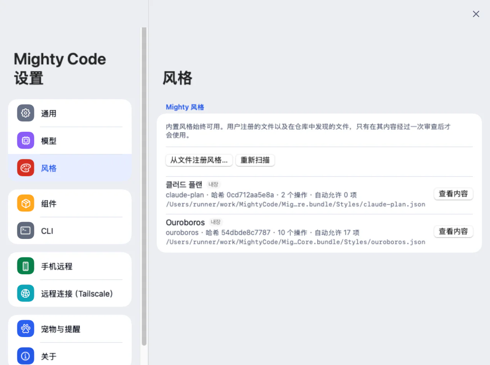
#远程连接
在远程连接标签页中，让其他电脑（Mac、Windows）或手机使用这台电脑的工作区，或打开其他电脑的工作区。顶部的说明下方有三个标签页。
- 共享这台电脑：用顶部状态行旁的开始共享 / 停止共享按钮开关共享。选择要共享的工作区，并在下方的连接方式中查看配对和Tailscale两行。请参阅共享这台电脑。
- 连接其他电脑：用配对链接或 Tailscale 地址连接其他电脑，并在下方的已连接的电脑列表中管理连接。请参阅连接其他电脑。
- 手机：连接手机。请参阅下方的手机。
Windows 共享这台电脑和手机标签页下方有Windows 防火墙。请参阅Windows 防火墙。
#手机
在远程连接 › 手机标签页中允许手机连接、用二维码连接手机，并管理已连接的设备。不需要另外准备中继。请参阅手机远程。折叠的高级中有使用自建中继时的中继地址栏（带应用按钮，下方显示默认地址）和允许旧版应用（无设备令牌）开关。只要其中任一项改过默认值，它一开始就是展开的。
屏幕查看与控制目前暂时停用，因此设置中没有这一项（远程屏幕）。
#Mighty Pet 与提醒
在Mighty Pet 与提醒标签页中设置 Mighty Pet 和完成通知。
- 显示 Mighty Pet：显示在屏幕上走动的浣熊 Mighty Pet。可以拖动 Mighty Pet 移动位置，点击它可以打开或关闭气泡。
- 在 Mighty Pet 气泡中显示请求和当前任务：在气泡中显示请求、当前任务和用时。也可以在气泡中回答批准请求（允许一次 / 拒绝）。批准、提问和计划气泡上的图标按钮会打开对应的窗格，以便查看完整请求或自己输入答案。
- 气泡上方附有该窗格最近一个请求的进度卡片，内容与窗格的进度面板相同：请求编号、已完成的步骤数、状态、所有步骤以及后台任务，各自附带用时。超过八行时可在卡片内滚动查看，打开时先显示当前步骤。点击卡片标题可折叠为只剩标题，再次点击即可展开；折叠状态在下次打开应用时依然保留。点击步骤行会打开对应的窗格。没有步骤也没有后台任务的请求、气泡显示批准、提问或计划时，以及气泡关闭时，不显示卡片。
- 宠物：选择宠物。可以用导入 Codex 宠物…添加其他宠物，用重新加载重新读取宠物列表，用重置位置和气泡大小把 Mighty Pet 位置和气泡大小恢复为初始状态。
- 减少 Mighty Pet 动画：减少动作。
- 任务完成时发送 Mac 通知（Windows 上为任务完成时发送 Windows 通知）：请求成功完成时发送 Mac 通知。点击通知会打开对应的窗格。通知中不包含请求或结果的内容。
- 接收终端通知：在窗格上标记其终端或 CLI 发送的通知与响铃。仅当应用在后台或你正在看其他窗格时才发送系统通知。默认开启（通知与响铃）。
- 下方显示操作系统的通知权限状态，通知设置按钮会打开系统的通知设置。

#组件
组件标签页显示应用所需的内容是否已准备就绪，智能体 CLI 的安装、登录和更新也都在这里管理。只显示适用于这台电脑系统的项目。
最上方一行是显示切换和两个按钮。
- 全部 / 需处理：选择需处理后，只显示需要处理的行，即未安装、未登录、有可用更新、失败或需要处理的项目。旁边的数字是这类项目的数量。
- 刷新（↻，刷新）：重新读取 PATH，并重新检查所有项目。
- 全部更新：立即更新所有已安装的智能体 CLI，每个 CLI 都沿用最初的安装方式（npm、Homebrew 等）。
列表分为三组：智能体 CLI（Claude、Codex、Antigravity、pi、opencode、Hermes）、工具（Git（Mac 上为 Xcode 命令行工具）、Homebrew（Mac）、Node.js、Bun（Mac）、uv、Tailscale、gh、glab）和Claude 插件（ouroboros、omc、gstack（Mac））。每个项目占一行，行内有展开标记（▸）、名称、版本，智能体 CLI 还有已登录的账户。右侧是状态，以及当前最需要的一个按钮。
- 状态：已安装、已就绪（智能体 CLI 已安装并已登录）、有可用更新、未登录、未安装、需要处理、安装中、失败。
- 按钮：缺少时为安装（只能通过下载页面安装的项目为打开下载页面），未登录时为登录，过旧时为更新。没有问题时不显示按钮。
点击某一行会就地展开（▾）。展开后显示详细信息（需要哪个版本、上次更新的结果、账户信息、需要处理的原因、该项目的用途），以及该项目的所有按钮，智能体 CLI 有更换账户、退出登录、刷新状态等。再次点击即可收起。展开过的行会一直保持展开，直到退出应用。
列表下方的自动更新框中有三个开关和上次运行的时间。把指针移到开关上即可看到说明。
- CLI：在打开应用时以及每 6 小时检查一次智能体 CLI 更新。
- 插件：同时更新 Claude 和 Codex 插件。
- 自动重新登录：登录过期时重新登录，并重新发送失败的请求。
点击安装，只会安装该项目以及它缺少的前置工具。所有要运行的命令会先在一个确认框中全部列出。
- macOS 在应用内的终端窗格中运行；没有打开本地工作区时，在终端（Terminal.app）中运行。
- Windows 在单独的 PowerShell 窗口中运行。
是否安装成功，由完成后的重新检查来判断。首次运行时打开的所需工具窗口是一个清单：选择缺少的项目并点击安装所选项目。
同一标签页的最下方是我的工具包框，用来自己收集常用工具，一开始是空的。用添加添加工具，每一项都有批准和移除按钮。只有批准过的工具才能安装；安装前会显示所有要运行的命令，并请你确认安装。可以导出或导入该列表。
#登录
在每个智能体 CLI 的那一行登录。未登录的 CLI 会在行内直接显示登录按钮，其他账户按钮在展开该行后显示。
- 点击登录。Claude 需要在使用 Claude 订阅登录和使用 Anthropic Console 登录（API 计费）之间选择。
- CLI 登录会在终端中开始。请在浏览器中完成授权。
- macOS 应用内会打开终端窗格。它在本地工作区中打开，因此需要至少打开一个工作区。
- Windows 会打开单独的控制台窗口，不需要工作区。
- 登录完成后，该行的状态会随之更新。如果没有更新，请展开该行并点击刷新状态。更换后的账户从下一个请求起生效。
要更换账户，请展开该行并点击更换账户；要退出登录，请点击退出登录。打开自动更新框中的自动重新登录后，登录断开时会自动重新登录，并重新发送失败的请求。
展开 Claude 一行后，还有重置并重新加载模型和Bedrock 设置按钮。Bedrock 设置以与登录相同的方式在终端中打开 Claude CLI 的 AWS Bedrock 设置向导，完成后请刷新状态。Windows Windows 上还有一个重置 Claude Bedrock 设置按钮，会先备份 Claude 用户设置，再删除 Bedrock 密钥和 Bedrock 模型设置。
#更新
智能体 CLI 与应用分开更新。
- 全部更新按钮：立即更新所有已安装的智能体 CLI。过旧 CLI 一行中的更新按钮也会运行 CLI 更新。
- 自动更新框中的CLI：在打开应用时以及每 6 小时检查一次。
- 插件：同时更新 Claude 和 Codex 插件。
更新时沿用 CLI 最初的安装方式（npm、Homebrew 等）。每个 CLI 上次更新的结果在展开该 CLI 一行后显示，插件更新的结果显示在Claude 插件组下方。
#关于
在关于标签页中可以更新应用，并查看数据存储位置。
- 应用更新：包括当前版本、自动更新开关、状态和按钮以及发行说明。请参阅更新。折叠的高级中有更新地址输入框和签名说明；填写过地址时会自动展开。
- 应用信息：有打开帮助按钮和状态存储位置。状态存储位置是存放应用设置和记录的文件夹，在 Mac 上用在 Finder 中显示按钮打开，在 Windows 上用在文件资源管理器中显示按钮打开。
09手机远程
通过手机应用，你在外面也能查看和操作 Mac 或 Windows 电脑上的 Mighty Code：查看任务状态、发送请求、回答批准和提问。
电脑与手机通过中继服务器连接。默认中继内置在应用中，无需另外准备。内容全程端到端加密，中继无法查看内容。无需在路由器上开放端口，也无需使用 VPN。如果你在用 Tailscale，手机也可以不经中继直接连接。
#获取手机应用
从下载页面下载 Android 应用（APK）并安装。
#连接手机
在电脑上：
- 打开设置… → 远程连接 → 手机标签页。
- 打开允许手机连接到此 Mac。在 Windows 上是允许手机连接到此电脑。旁边会显示连接状态；如果一直停在正在连接中继，请点击重新连接按钮。
- 连接手机中会出现二维码和三个步骤的说明。
在手机上：
- 打开手机应用，轻点主机标签页中的+ 添加主机。首次打开时会先显示连接指南。
- 用扫描二维码扫描电脑上的二维码。如果无法使用相机，请在电脑上点击复制配对链接按钮，把链接发到手机，再粘贴到粘贴链接中。链接中含有密钥，因此会作为机密内容复制，并在一分钟后从剪贴板清除。
- 轻点连接后，电脑上会弹出“新设备请求连接”窗口和通知，手机上会提示你在电脑上允许。在电脑上点击允许即可连接，这部手机会出现在已连接的设备中。60 秒内未允许或点击拒绝（默认按钮）则不会连接。不是你亲自配对的手机请不要允许。
二维码旁有主机 ID和配对密钥。密钥要点击显示按钮才会显示。二维码、链接和密钥是一次性的配对码：显示在屏幕上时一直有效，关闭界面 10 分钟后失效，有一台设备连接或被拒绝后会换成新的配对码。已配对的设备用设备令牌连接，不会再次请求允许。
连接方式中有两种连接方式：
- 中继（默认）：默认方式，无需任何操作。
- 通过 Tailscale 直接连接：设置端口并应用，下方显示状态。请参阅通过 Tailscale 直接连接。
已连接的手机和已配对的电脑会在已连接的设备列表中各占一行，电脑以电脑图标区分（重启应用后仍保留）。只要有任何设备，即使手机连接开关已关闭，这个列表也会显示。不再使用某台设备时，请点击该行的解除配对按钮。只有这台设备会解除配对，其他手机和电脑仍保持连接。此时屏幕上的配对码也会更新。已连接的手机再次扫描二维码连接时，会像新设备一样请求允许（并提示将替换原设备），允许后旧的连接不再可用。
点击重新生成密钥后，所有已连接的手机和已配对的电脑都会解除配对，这台电脑的中继 ID 和加密密钥也会重新生成，所有设备都需要用新的二维码或链接重新连接。请在有人未经允许连接或设备丢失时使用。
#手机可见的工作区
在 手机 标签页的 手机可见的工作区 中，选择配对的手机能看到这台电脑的哪些工作区。
- 所有本地工作区：默认值。手机能看到这台电脑上的所有工作区，并打开其中的窗格、文件（包括
.env这样的文件）和运行。 - 仅共享的工作区：手机只能看到 共享这台电脑 当前共享的工作区。共享关闭时一个工作区也看不到；不能打开其他工作区的窗格、文件或工作地图，也不能向其发送请求，也收不到这些窗格的通知。
更改从手机的下一个请求起生效，连接不会断开。
#通过 Tailscale 直接连接
Mac 和手机在同一个 Tailscale 网络中时，手机会不经中继直接连接 Mac。配对方式和加密都不变；直接连不上 Mac 时，手机会自动改用中继。
- 在 Mac 和手机上打开 Tailscale，并用同一个账号登录。
- 在电脑的 手机 标签页中确认 通过 Tailscale 直接连接 已打开（默认打开）。下面一行显示 Tailscale 地址就说明准备好了。如果显示 未找到 Tailscale，说明 Mac 上的 Tailscale 没有打开。
- 已经配对的手机不需要重新配对。下次连接时 Mac 会告诉它自己的地址。
在手机的 主机 标签页中，Mac 卡片上会显示 Tailscale 直连 或 中继。
Windows 电脑也一样，只是需要一条 Windows 防火墙规则，以免连接被拦截。在 手机 标签页下方的 Windows 防火墙 中点击 添加防火墙规则 按钮，并允许 Windows 的管理员确认。该规则只允许来自 Tailscale 地址的连接到达本应用。规则存在后，可以用 更新防火墙规则 按钮按当前使用的端口调整规则，用 删除防火墙规则 按钮删除规则。关闭直接连接或手机连接时会一并删除规则（如果这台电脑正在共享工作区，还需要它的端口，规则就会保留），Windows 会再次请求管理员确认。这是同一条规则，同时打开手机直连的端口和工作区共享的端口，因此在 共享这台电脑 标签页中修改的也是同一条规则（Windows 防火墙）。
#在手机上可以做的事
手机应用有三个标签页。
| 标签页 | 内容 |
|---|---|
| 概览 | 工作状态：所有已配对电脑的运行中、待你处理和已完成数量合计，下面依次列出每台电脑的工作区和会话。打开会话可以查看对话并发送请求。 |
| 提醒 | 需要你回复的批准和提问，以及已完成的任务 |
| 主机 | 已连接的电脑（Mac、Windows）及其连接状态 |
在会话中，可以发送和停止请求，更改模型、权限和思考强度，使用斜杠命令，附加文件，以及查看工作区文件（只读）。
会话中的任务正在运行时，发送按钮会变成加入队列，你发送的内容会作为该窗格的下一个请求进入队列，不会插入正在运行的任务。
当电脑上的应用足够新时，排队的请求会显示立即运行按钮。点按后，由电脑决定是在电脑上的新 worktree 子窗格中运行，还是在本窗格中运行。灰色的按钮在点按时会说明原因。手机不能选择代理。
在流程视图中，已完成的请求会直接显示请求和最终结果。过程步骤折叠为一行，点击即可展开。仍在运行的请求会显示所有步骤。
当结果提到工作区中的文件时，最终结果下方会附上结果中的文件列表。其中的文件与桌面应用结果旁的列表相同，文件名下方以浅色显示其所在的文件夹。文件较多时只显示前五个，其余的用下方的按钮展开。点击文件即可在工作区文件查看中打开它。该列表只随成功的结果出现；其他电脑上的工作区，或不发送此列表的旧版桌面应用，不会显示它。 如果该文件是此请求更改过的源代码或 Markdown，顶部会出现 更改 | 完整文件 标签，并先显示更改：只显示更改的行，附有旧行号和新行号，添加的行为绿色背景，删除的行为红色背景。只有支持此功能的桌面应用才会提供这个视图。
流水线视图以看板的形式逐个显示桌面应用发送的流水线。没有风格的窗格中每个请求是一个看板；使用风格的窗格中每条流水线是一个看板，即阶段不回退的一串连续请求。用顶部的 ◀ ▶ 切换看板，点击中间的位置（如"请求 3 / 7"）可从列表中选择。查看较早的看板时如果出现新看板，会显示新请求或新流水线标记，点击即可前往最新的看板。下面是看板的状态和一排阶段标签：已完成的阶段为绿色，当前阶段为强调色，尚未开始的阶段为灰色，每个标签都带有卡片数。每个阶段各有一列，左右滑动或点击标签即可切换，打开时显示当前阶段的列。没有风格的窗格的列为请求 → 执行 → 结果，子代理卡片排在执行卡片之后。使用风格的窗格中，每列列出该阶段的请求及其子代理，已结束的请求折叠为一张卡片，点按即可展开。正在运行的卡片边框会闪烁。此视图需要与手机应用版本相同或更新的桌面应用（Mac 或 Windows）；桌面应用较旧时，视图会提示更新桌面应用。
在桌面应用（Mac 和 Windows）中通过 Mighty 编排创建的子窗格，会在会话列表中缩进一级显示在父窗格下方，右侧显示其状态（已报告、已合并 等）。不发送这些信息的旧版应用中的子窗格，在列表中与普通窗格一样显示。合并或丢弃子窗格无法在手机上进行，只能在桌面应用（Mac 或 Windows）中进行。使用 Antigravity 的桌面应用（Mac 0.4.23 及以上、Windows 0.4.28 及以上）中的 Gemini 窗格显示为 Antigravity（Beta），更旧版本应用中的窗格显示为 Gemini。
#批准与提问
智能体请求批准或提问时，提醒标签页上会显示数量。
- 权限请求：轻点允许或拒绝。
- Antigravity 权限卡片：每项被拒绝的操作都会显示类型以及命令、地址或路径。可选择允许一次、始终允许或拒绝；允许后会在同一个对话中继续（Antigravity 的权限卡片）。如果卡片中只有没有规则可以允许的操作，则只有拒绝，并提示你更改权限模式。如果命令会串联、使用管道、重定向或可能删除数据，则不显示始终允许。如果主机无法接受你的答复，卡片会保留并显示原因。不认识这种卡片的旧版手机应用会把它显示为普通的权限请求。
- 提问：选择答案后，轻点发送回答。
- 计划卡片：用与 Mac 上相同的按钮（批准并执行（自动编辑）、请求更改等）回答。
#通知
已连接的电脑（Mac 或 Windows）上的运行完成或失败时，以及需要你处理权限请求、问题、待批准的计划或登录过期时，手机会收到通知。目前只有 Android 应用会收到。
- 第一次打开应用时（Android 13 及以上）会询问一次是否允许通知。要按类型关闭，请在 主机 标签页打开 设置，修改 通知 下的开关。如果系统设置里该应用的通知被关闭，设置 会提示。
- 收到权限请求通知时，可以直接点 允许 或 拒绝。Antigravity 卡片提供 允许一次、始终允许 和 拒绝。只能允许一次的卡片（例如串联命令或可能删除数据的命令）没有 始终允许。问题和计划的通知没有按钮，点开后在应用里回答。没有任何可允许操作的 Antigravity 卡片同样不带按钮，点开后在应用里回答。
- 按钮只有在手机解锁后才起作用。锁屏时点按，通知会变为“请解锁手机后再点一次。”，按钮仍保留。如果已在电脑上回答，通知会变为 已处理；如果答复没能发出，会变为 无法回复。点按以打开。。最后这种情况请点开通知，在应用里回答。
- 可以按工作区关闭通知。点按工作区名称旁的铃铛，该工作区的通知就会关闭，铃铛上会出现斜线。再点一次即可重新开启。所有工作区一开始都是开启的，这个设置只对这部手机有效，连接同一台电脑的其他手机照常收到。应用还没见过该工作区，或超过一天没有收到电脑的列表时，通知仍可能送达。
- 点按通知会打开对应的会话。手机正在显示某个会话时，不会收到关于它的通知。
- 通知在锁屏上以私密方式显示：如果你设置了在锁屏上隐藏敏感内容，标题和正文就不会显示。
- 电脑会加密每条通知，只有这部手机能读取，中继和 Google 无法读取。通知经由中继发送，因此通过 Tailscale 直接连接时，只要电脑能上网也会收到。
- 电脑应用和手机应用都必须是带有此功能的版本。没有此功能的电脑应用不会发送通知。如果你是用很旧的手机应用配对的，请重新配对。
- 0.4.58 起默认中继换到了新服务器。在此之前连接的手机如果收不到通知，请用二维码重新连接一次。
- 在电脑上关闭手机连接期间，电脑不会发送任何内容；重新打开后，也不会补发这段时间里发生的事。
应用崩溃时只会把出错位置发给开发者，不发送对话、命令或路径。可以在 设置 中关闭 发送崩溃报告。
#远程屏幕
在手机上查看电脑的屏幕，获得允许后还可以操控。这是Beta功能。
从 0.4.58 起，屏幕查看与控制暂时停用（Mac 和 Windows 都是）。手机上不会出现查看屏幕的按钮，电脑的设置中也没有屏幕查看这一项。为每部手机设定的允许范围和已授予的权限都会保留，重新开启后恢复。
#桌面应用更新
当 Mac 或 Windows 应用有新版本时，手机上该电脑的会话列表上方会出现 桌面应用更新 横条。按 更新，电脑就会下载并安装新版本，然后重新启动应用。你不需要在电脑旁边。
- 有正在运行的请求时，会先告诉你有几个会停止，确认后才继续。
- 应用重新启动时连接会短暂断开，然后自动恢复。
- 电脑从官方地址下载更新，并在验证签名后才安装。手机只负责通知它开始。
- 此功能适用于 0.4.55 及以后版本的电脑。
#更改中继地址
默认中继（Cloudflare）内置在应用中，通常不需要更改。如果需要使用其他中继，请展开 手机 标签页底部折叠的 高级。
- 中继地址：填写中继地址（
wss://…）并点击应用。留空则使用默认中继。 - 允许旧版应用（无设备令牌）：默认关闭。开启后（确认警告后），没有设备令牌的很旧的手机应用仅凭下方的旧版应用密钥即可连接，无需允许。任何知道该密钥的人都能远程操作这台电脑，请仅在需要时开启，用完后关闭。当前应用不需要它。
10远程连接
连接两台 Mac 或 Windows 电脑上的 Mighty Code 后，可以在一台电脑上打开另一台的工作区，并在那台电脑上运行 Claude、Codex、Antigravity 和命令。文件和 CLI 登录都留在实际运行的电脑上，不会复制或同步项目文件。
连接方式有两种：
- 配对：像手机一样配对一次，然后经由 Mighty 中继连接，不需要 Tailscale。请参阅通过配对连接。
- Tailscale：在同一个 Tailscale 网络（tailnet）内，用地址和连接密钥直接连接。在那台电脑上运行本机窗格的远程窗格以及大附件只能通过 Tailscale。
这些都在 设置… → 远程连接 标签中进行。标签顶部有一行说明，下方有 共享这台电脑 | 连接其他电脑 | 手机 三个标签。内部标签只在应用运行期间被记住。连接手机请参阅手机远程。
#准备
- 在两台电脑上安装 Mighty Code。
- 在负责运行的电脑（主机）上安装并登录要用的 CLI。远程运行使用主机的 CLI 和账号。
- 要通过 Tailscale 连接，请在两台电脑上安装 Tailscale 并登录同一个 tailnet。不需要路由器端口转发，也不需要 Tailscale Serve 或 Funnel。只需确认 tailnet 策略允许两台设备互相连接。
#共享这台电脑
在主机电脑上：
- 打开 设置… → 远程连接 → 共享这台电脑 标签。
- 在 要共享的工作区 中勾选要共享的本地工作区。
- 在下方的 连接方式 中准备要用的方式（见下文）。
- 点按顶部状态行旁的 开始共享。共享期间，该位置改为显示 正在共享的工作区 列表。
连接方式 中每种方式占一行：
- 配对：有 接受已配对电脑的连接 开关和中继状态，打开开关后会出现 复制配对链接 按钮。链接中含有电脑专用的配对码（与手机二维码不同），因此会作为机密内容复制，并在一分钟后从剪贴板清除。在无法使用中继的运行中，开关会变灰并显示原因。请参阅通过配对连接。
- Tailscale：这台电脑没有 Tailscale 地址时，会显示相应说明和 在组件中安装 按钮，点按后打开 组件 标签。开始共享前有 端口 输入框，一般保持不变（43137）。共享期间会显示这台电脑的 Tailscale 地址和 连接密钥。用显示按钮查看密钥，用 复制 复制后告诉要连接的一方。
即使没有 Tailscale，只要打开了 接受已配对电脑的连接，也能开始共享。此时只有已配对的电脑能经由中继连接。
共享期间会显示 允许远程使用完全权限和执行命令 开关。关闭时（默认），已连接的电脑不能使用远程命令窗格，也不能以完全权限运行代理；这类请求会在运行前被拒绝，窗格中会显示原因。每次开始共享时它都会重新关闭。
只要这个开关关闭，已连接的电脑也不能使用共享电脑无法限制在共享文件夹内的智能体窗格（无论权限模式如何）：由 Mac 共享时是 Antigravity、pi、opencode 和 Hermes（它们都没有沙箱），由 Windows 共享时是包括 Codex 在内的所有 Claude 以外的智能体（Windows 无法像 Mac 那样把 Codex 限制在沙箱内）。Mac 上的 Codex 在自己的沙箱中运行，两边的 Claude 窗格在开关关闭时也照常运行并请求权限。在这类窗格中，不只是发送内容，允许工具、回答问题和批准计划也需要打开这个开关。
Tailscale 共享只在这台电脑的 Tailscale 地址上接受连接。每次打开应用时共享都是关闭的。点按 停止共享 会停止远程运行并作废连接密钥；再次共享时需要告知新的密钥。
已连接的设备可以在共享的工作区中运行任务和命令。根据权限模式，它们可能以主机用户的权限访问文件夹以外的内容。持有 Tailscale 连接密钥的设备可以直接连接，因此请只把密钥告诉你信任的设备。配对链接只能使用一次，并且要在主机上点击允许才会连接。
#连接其他电脑
在要下达任务的电脑上：
- 打开 设置… → 远程连接 → 连接其他电脑 标签。添加窗格 菜单中的 连接其他电脑… 也会打开同一处。
- 在上方的二选一开关中选择 配对链接 或 Tailscale 地址。
- 配对链接：粘贴从主机收到的链接，可按需填写 名称。
- Tailscale 地址：输入 地址（Tailscale IP 或 MagicDNS 名称）和 连接密钥，可按需填写名称。如果主机没有更改端口，只输入地址即可。
- 点按 连接。
下方的 已连接的电脑 列表中每个连接占一行，显示电脑名称、方式标签（配对或 Tailscale）、状态（已连接、已断开、已保存），以及 刷新、断开连接 按钮和删除图标。已连接电脑下方会列出共享的工作区。连接后，那台电脑共享的工作区会连同其中打开的窗格自动出现在侧边栏；点按 查看 可直接前往（原样显示那台电脑的窗格）。标签底部有折叠的 远程工作区能做和不能做的事。
远程工作区在侧边栏中以电脑图标和主机名称区分，工作区标题和底部状态栏会显示连接状态。重新打开应用后，连接仍保持已保存状态，在远程窗格中第一次发送或点按 刷新 时会重新连接。
macOS 连接密钥只保存在 macOS 钥匙串中，不会写入工作区记录。重新连接时如果 macOS 询问钥匙串访问权限，请选择“始终允许”；应用以相同的签名发布，因此这个选择在更新后仍然有效。
Windows 在 Windows 上，连接密钥同样不会写入工作区记录，而是加密保存在应用的数据文件夹中，只有当前 Windows 用户可以读取。通过 Tailscale 共享需要一条防火墙规则（Windows 防火墙）。
#通过配对连接（无需 Tailscale）
两台电脑都没有 Tailscale 时，也可以像手机一样配对一次，然后经由与手机远程相同的 Mighty 中继连接。中继内置在应用中，无需另外准备。连接采用端到端加密，中继无法读取内容；连接方使用原样显示那台电脑的窗格。
在主机电脑上：
- 打开 设置… → 远程连接 → 共享这台电脑 标签，在 连接方式 的 配对 一行中打开 接受已配对电脑的连接。
- 选择工作区并点按 开始共享。共享期间本机会连接中继，同一行会显示其状态。
- 点按 复制配对链接，把链接交给要连接的电脑。此链接只用于电脑（手机二维码不能配对电脑，反之亦然），只能使用一次，关闭此界面 10 分钟后失效。另一台电脑请求连接时，这台电脑会弹出“新设备请求连接”窗口和通知，确认无误后点按 允许（60 秒内未回应将被拒绝）。
在要连接的电脑上：
- 在 远程连接 → 连接其他电脑 标签的开关中选择 配对链接，粘贴链接，可按需填写名称，然后点按 连接。在主机允许之前，会提示你在那台电脑上允许。
- 连接后，那台电脑会带着配对标签出现在 已连接的电脑 列表中，并以“远程 · 名称”出现在侧边栏中。连接与断开的方式与 Tailscale 连接相同。
- 链接中含有电脑专用的短时配对码。即使链接落入他人手中，只要你不在主机上允许就不会连接。第一次连接时，主机会给这台电脑一个专属的设备令牌，之后都用这个令牌连接，不会再次请求允许。令牌像连接密钥一样保存在 macOS 钥匙串中（在 Windows 上保存在只有当前用户能解密的文件中），不会写入工作区记录。主机关闭 接受已配对电脑的连接 或未在共享时，新的电脑无法连接。
- 已配对的电脑也会带着电脑图标出现在主机 手机 标签的 已连接的设备 列表中（即使手机连接开关已关闭，重启后也会显示）。该行的 解除配对 按钮只解除这台电脑的配对，其他手机和电脑仍保持连接。点按 重新生成密钥 会解除所有手机和电脑的配对，并重新生成主机的中继 ID 和加密密钥，之后需要用新链接重新连接。
- 只能看到共享的工作区，允许远程使用完全权限和执行命令 开关以及无法限制的智能体的规则与 Tailscale 连接完全相同。
- 手机的设置不会改变。如果没有在 手机 标签中允许手机连接，即使打开这个开关，手机也无法连接。
- 中继一次最多传送 1 MB。通过配对连接发送的附件合计约 750 KB 以内（文件内容以 base64 传送会变大），超出时会在发送前提示。大文件请通过 Tailscale 连接后发送。较长的对话会显示能放进 1 MB 的最新条目。
- 配对连接只提供原样显示那台电脑的窗格。要在那台电脑上运行本机窗格的远程窗格（打开 按钮）需要 Tailscale 连接。
- 主机停止共享或关闭开关后，连接方会显示共享已停止。主机重新共享后，点按 刷新 即可重新连接，无需新的链接。
#Windows 防火墙
Windows 在 Windows 上，共享这台电脑 和 手机 标签下方有 Windows 防火墙。它管理一条只向 Tailscale 地址段打开应用端口的规则，并用一行显示当前状态。
- 点按 添加防火墙规则 添加规则。Windows 会弹出一次管理员确认。
- 规则已存在时，同一位置会出现 更新防火墙规则 按钮，按当前使用的端口修改规则。如果规则没有包含当前使用的全部端口，会提示需要更新。
- 点按 删除防火墙规则 删除规则。
这一条规则同时打开工作区共享端口和手机直接连接端口。因此在任一标签中修改的都是同一条规则，删除规则会同时关闭这两个端口。配对连接经由中继，不需要这条规则。
#原样显示那台电脑的窗格
连接到其他电脑后，那台电脑共享的工作区会连同其中打开的代理窗格一起出现在侧边栏。对话、Mighty 视图、进度和状态实时同步，你可以在这里发送、停止，并回答批准、提问和计划。窗格在那台电脑上用它的 CLI 和账号运行；你发送的内容成为该窗格的下一个请求，正在运行时会排进那台电脑的队列。
- 侧边栏在本机工作区下方为每台服务器显示“远程 · 服务器名”标题，以及地址和连接状态。绿点表示已连接，橙点表示正在重新连接，灰点表示已断开。标题的 … 菜单中有 连接 和 断开连接。
- 远程窗格上方有 远程窗格 条，显示在哪台电脑上运行、连接状态以及那台电脑队列中的请求数。底部状态栏显示类似“远程 · 在那台电脑上运行 · 已连接”。
- 用 添加窗格 菜单可在那台电脑上打开新的代理窗格；关闭窗格也会关闭那台电脑上的窗格。
- 断开连接后，窗格保持最后的样子，无法发送。删除连接会移除该服务器的工作区。这些窗格不会保存在本机，重新打开应用后需要连接才会再次出现。
- 对话最多显示最近 80 条，不显示图片。重命名窗格以及更改模型、权限模式请在那台电脑上进行。命令窗格不显示，远程窗格不能使用的功能同样不可用。
- 向以完全权限运行的窗格发送内容以及“始终允许”，仅在那台电脑打开了 允许远程使用完全权限和执行命令 时可用。 向那台电脑无法限制的智能体窗格发送内容和作答（允许工具、回答问题、计划）也需要打开这个开关：Mac 上是 Antigravity、pi、opencode 和 Hermes，Windows 上是 Claude 以外的所有智能体。
- 如果那台电脑的 Mighty Code 是不支持此功能的旧版本，窗格不会出现，标题会说明原因。此时请用 已连接的电脑 列表中的 打开 按钮，把其工作区作为本机的远程窗格使用（Tailscale 连接）。
#使用远程窗格
- 代理窗格的用法与本地窗格相同。模型、权限模式、思考强度和 Fast 模式会原样传给主机；主机 CLI 不支持的设置会在运行前提示。
- 权限、提问和计划卡片会出现在本应用中，你的回答会传给主机上的运行。运行期间发送的请求会像本地窗格一样放入队列，在当前运行结束后开始。
- Mighty 视图（流程、记录、流水线）的显示与本地运行完全相同。
- 新建远程命令 窗格的每条命令都会在主机的共享文件夹中打开新的 shell。不支持交互式程序和密码输入。
- 远程窗格会在状态栏和会话信息中显示运行电脑的系统（macOS 或 Windows）。新建远程命令 窗格在 Mac 主机上用登录 shell、在 Windows 主机上用 PowerShell 运行命令。
- 附加的文件会以内容本身发送：一次最多 8 个，每个 5 MiB，合计 8 MiB。
远程工作区中不能使用以下功能，因为它们读取的是这台电脑的磁盘或网络：
pi、opencode 和 Hermes 窗格暂时还不能在远程工作区中打开。远程工作区不会显示在手机远程中。
#连接断开时
- 网络断开时，正在运行的远程窗格会以错误结束，已连接的电脑 列表会显示原因。主机会在约 30 秒内自行停止失去联系的运行。
- 断开连接 会停止该连接的运行并保留连接信息。要再次使用，请点按 刷新 或在远程窗格中发送。要连同连接信息一起删除，请点按该行的删除图标。
- 如果 Tailscale 主机重新开始共享，就需要新的密钥。用新密钥连接同一个地址，会替换已保存连接的密钥。
- 主机电脑休眠或其 Mighty Code 退出时，无法发送新的任务。
11Windows 上的不同之处
本帮助以 Mac 界面为准编写。Windows 应用以相同的名称提供相同的功能，本页只汇总不同的部分。
Windows 应用目前为Beta版。窗口标题上带有 Beta 标记。
#安装
- 从下载页面下载适合你电脑的安装程序。大多数电脑选择
MightyCode-windows-x64-setup.exe，骁龙等 ARM 电脑选择MightyCode-windows-arm64-setup.exe。 - 运行安装程序。它无需管理员权限，只为当前用户安装到
%LOCALAPPDATA%\Programs\MightyCode，并在开始菜单中添加 Mighty Code。安装时可以选择是否创建桌面快捷方式。 - 在最后一页直接启动，或之后从开始菜单打开。
要删除它，请在 Windows 设置 → 应用 → 已安装的应用中卸载 Mighty Code。安装文件夹会被整个删除，设置和对话记录（%APPDATA%\MightyCode）会保留。
如果不想安装，可以从同一页面下载 zip，解压整个文件夹后运行其中的 MightyCode.exe。文件夹中的其他文件也是必需的，请勿把 exe 单独移到别处。
可在 Windows 10（版本 2004）或更高版本，或 Windows 11 上运行。
此应用没有代码签名，Windows（SmartScreen）可能会阻止安装程序或首次运行。遇到这种情况，请点按更多信息，再点按仍要运行。应用窗口和终端窗格都由 Microsoft Edge WebView2 运行时绘制。Windows 10 和 11 通常已自带；如果没有，请从 Microsoft 下载并安装 WebView2 运行时。
更新方式与 Mac 相同：应用会自行下载新版本，在你关闭应用时安装；应用空闲时，会在一分钟提示后重新启动并安装（更新）。要手动更新，请在设置… → 关于中操作。用安装程序安装的应用会在同一文件夹中替换为新版本，已安装的应用列表中显示的版本也会随之更新。也可以直接运行新的安装程序覆盖安装。
#快捷键
用Ctrl代替⌘。只有收起侧边栏和帮助的按键不同。CtrlO用于打开已有文件夹。与 Mac 一样，新建文件夹…和从 Git 创建…可以在侧边栏文件夹按钮的菜单、侧边栏为空时和欢迎界面上的按钮，以及添加窗格菜单中选择，它们没有快捷键（打开工作区）。
| Mac | Windows | 操作 |
|---|---|---|
| ⌘O | CtrlO | 打开现有文件夹… |
| ⌘N | CtrlN | 新建 Claude 窗格 |
| ⌘T | CtrlT | 添加终端窗格 |
| ⇧⌘E | CtrlShiftE | 打开文件窗格 |
| ⇧⌘F | CtrlShiftF | 搜索对话 |
| ⇧⌘R | CtrlShiftR | 审阅队列 |
| ⇧⌘U | CtrlShiftU | 转到需要注意的窗格 |
| ⌘K | CtrlK | 搜索工作区 |
| ⌃⌘S | CtrlB | 收起侧边栏 / 展开侧边栏 |
| ⌘, | Ctrl, | 设置… |
| ⌘? | F1 | Mighty Code 帮助 |
| ⌘= / ⌘- / ⌘0 | Ctrl= / Ctrl- / Ctrl0 | 放大文字 / 缩小文字 / 默认文字大小 |
| ⌘Enter | CtrlEnter | 在运行中的窗格里立即在新的 worktree 中运行，无法这样做时放入队列 |
Windows 没有菜单栏。相同的功能位于侧边栏和添加窗格菜单中。
#不同之处
| 功能 | 在 Windows 上 |
|---|---|
| 所需工具 | 所需工具在单独的 PowerShell 窗口中安装，使用 winget 和各 CLI 的官方 PowerShell 安装脚本。列表中没有 Homebrew、Bun 和 gstack。不再显示保存为注册表 HKEY_CURRENT_USER\Software\MightyCode 下的 setup.neverShow 值（REG_DWORD）。 |
| CLI 登录 | 不在应用内的终端中进行，而是在单独的 Windows 终端窗口中进行。登录完成后，与 Mac 一样会自动重新发送失败的请求。 |
| Antigravity | 通过 PowerShell 安装程序安装到 %LOCALAPPDATA%\agy\bin，记录保存在 %USERPROFILE%\.gemini\antigravity-cli（Antigravity）。 |
| 终端窗格 | 使用 Windows PowerShell。 |
| 完成通知 | 通过任务完成时发送 Windows 通知开启。 |
| 远程屏幕 | 手机远程的屏幕查看与 Mac 一样暂时停用。 |
| 语言 | 更改的语言在重新打开应用后生效。 |
| 文件位置 | 提供在文件资源管理器中显示，而不是在 Finder 中显示。 |
| Mighty 编排 | 默认开启，可用通用 › 代理窗格中的开关关闭，这个开关也是一个注册表值（开启和关闭）。worktree 位于 %USERPROFILE%\.mightycode\worktrees，其中含有目录联接或符号链接时不会自动清理（关闭窗格和清理）。窗格运行时，在输入框的运行时发送到中选择其他代理，可在该代理的子窗格中运行请求（在新 worktree 中运行）。 |
| 文字大小和字体 | 与 Mac 相同，在通用 › 文字中选择大小（85–150%）、界面字体、对话字体和代码和终端字体，所有打开的窗口会立即跟着变化。也可以用 Ctrl= / Ctrl- / Ctrl0，但终端窗格获得焦点时，这些键留给该窗格。设置保存在注册表 HKEY_CURRENT_USER\Software\MightyCode 中。由 Windows 自带控件决定的文字（例如确认窗口的正文）在重新打开应用后才会变化，Mighty Pet 气泡暂时不跟随此设置。 |
| 通过 Tailscale 直接连接 | 手机也能直接连接到 Windows 电脑。在远程连接标签页的Windows 防火墙中用 添加防火墙规则 按钮添加 Windows 防火墙规则，Windows 会请求一次管理员确认。本应用只有在更改这条防火墙规则时才请求管理员权限，这一项位于共享这台电脑和手机标签页下方（Windows 防火墙）。 |
| 远程连接 | 屏幕和协议与 Mac 相同，Mac 与 Windows 之间任一方向都能连接（远程连接）。连接密钥不放在钥匙串里，而是保存在只有当前 Windows 用户能解密的文件中；要通过 Tailscale 共享时，用 添加防火墙规则 按钮添加一条防火墙规则（与手机直连共用同一条规则，需要一次管理员确认）。远程命令在 Windows 主机上用 PowerShell 运行。共享时如果 允许远程使用完全权限和执行命令 开关关闭，其他电脑不能在 Windows 主机上使用 Claude 以外的智能体窗格（Codex、Antigravity 等），因为 Windows 无法把这些智能体限制在共享文件夹内（Mac 主机只接受在沙箱中运行的 Codex）。Mac 与 Windows 之间的连接尚未在真实设备上验证。 |
通过 Tailscale 直接连接默认开启，因此应用第一次等待手机连接时，Windows Defender 防火墙可能会弹出它自己的提示，说已阻止此应用的部分功能。请选择允许访问（Windows 随后会为此应用添加它自己的、范围更广的规则）。如果选了取消，Windows 可能已添加阻止 MightyCode.exe 的规则，而这些规则优先于应用的规则：请打开 Windows Defender 防火墙 → 高级设置 → 入站规则，删除阻止 Mighty Code 的规则。
Windows 应用的部分功能尚未在真实设备上充分验证。如发现异常，请告诉我们。
12常见问题与故障排除
#无法发送请求
- 输入框下方会显示无法发送的原因。如果 CLI 未安装或需要登录，请检查设置… → 组件。
- 终端窗格不能附加文件。请使用 AI 窗格。
- 运行期间按Enter默认不会立即发送，而是放入队列。如果在输入框下方的运行时发送到中选了代理，则会立即在该代理的新 worktree 中运行。请参阅运行时继续提出请求。
#模型列表中没有想要的模型
- 打开模型按钮，点击刷新模型列表。
- 如果仍然没有，请在组件标签页的 Claude 一行中点击重置并重新加载模型按钮。
- 自己使用的模型名称，可以添加到模型标签页的已注册的名称中。
#登录总是断开
请打开组件标签页中的登录断开时自动重新登录。登录一断开就会重新开始登录，并重新发送失败的请求。请参阅登录断开时。
#韩文输入被拆成单独的字母
在菜单栏的工作区菜单中点击重新连接输入法。如果问题仍然存在，请用保存输入法诊断信息保存诊断文件并发给我们。
应用运行期间，请勿覆盖应用文件，也不要同时打开两个应用。这可能会断开与 macOS 输入法的连接，导致韩文被拆成单独的字母。更新请交给应用在退出时安装已下载的版本，或使用应用内的立即重新启动（更新）。
#Antigravity 拒绝了命令或文件写入
Antigravity 在工作过程中无法提问，所以会跳过需要询问的操作并结束这一轮。窗格中随后会出现一张列出被拒绝操作的卡片。点允许一次或始终允许，就会在同一个对话中继续，无需自己修改规则文件。请参阅 Antigravity 的权限卡片。
#Antigravity 卡片上的始终允许是关闭的
串联命令、使用管道、重定向或可能删除数据的命令只能允许一次。规则会允许以该文本开头的所有命令，长期保留这样的规则有风险。请参阅 Antigravity 的权限卡片。
#手机无法连接
- 检查电脑的远程连接 › 手机标签页中是否已打开允许手机连接到此 Mac（Windows 上为允许手机连接到此电脑）。
- 如果状态一直停在“正在连接中继”，请点击重新连接按钮。
- 如果手机的主机标签页中显示需要重新配对，说明电脑重新生成了密钥，或解除了这部手机的配对。请用二维码重新连接。
- 电脑处于睡眠状态时无法连接。
- 0.4.58 之前连接的手机如果收不到通知，请用二维码重新连接一次。默认中继已换到新服务器（通知）。
#关闭窗格后，对话会消失吗？
不会。对话记录会作为 CLI 的会话保留下来。在同一文件夹中新添加智能体窗格时，选择继续…按钮即可继续。请参阅继续之前的会话。
#我的数据保存在哪里？
应用的设置和记录只保存在这台电脑上。位置可以在关于标签页的状态存储位置中查看。发送给 AI 的请求由各个 CLI 发送到各自公司的服务。使用手机远程时，内容会以加密状态经过中继。